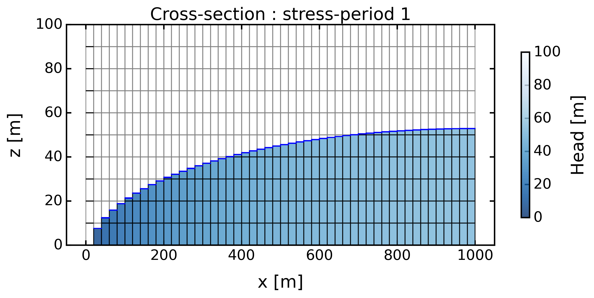
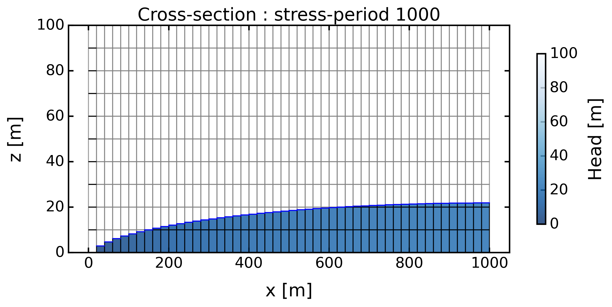
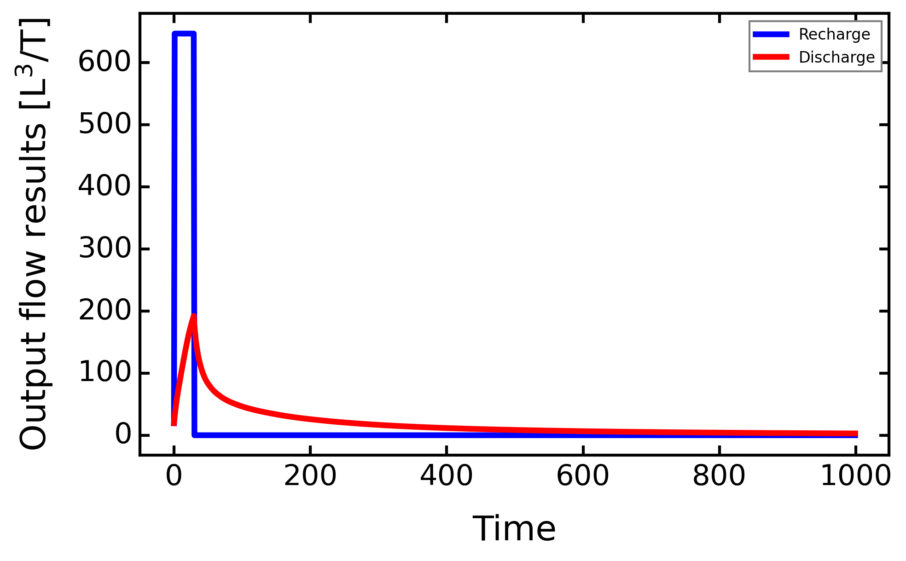
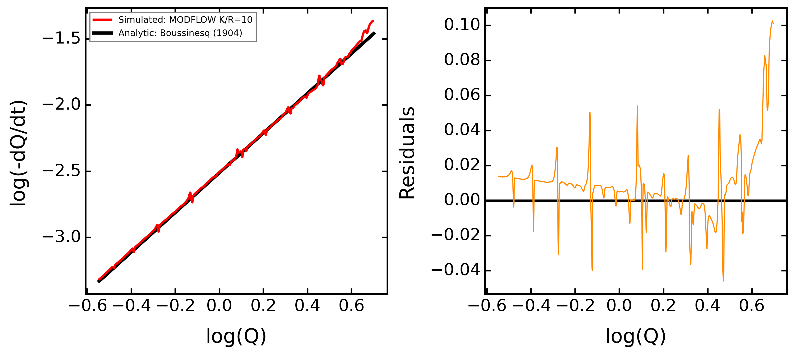
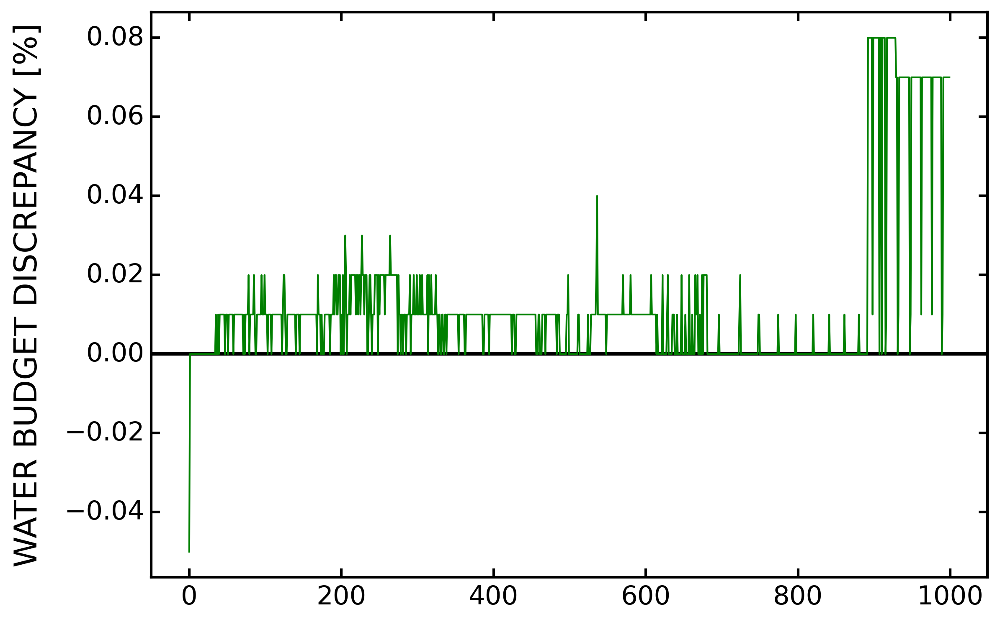

Analytical Solution For Streamflow Recession#
[2]:
# -*- coding: utf-8 -*-
"""
* Copyright (c) 2023 Alexandre Gauvain, Ronan Abhervé, Jean-Raynald de Dreuzy
*
* This program and the accompanying materials are made available under the
* terms of the Eclipse Public License 2.0 which is available at
* http://www.eclipse.org/legal/epl-2.0, or the Apache License, Version 2.0
* which is available at https://www.apache.org/licenses/LICENSE-2.0.
*
* SPDX-License-Identifier: EPL-2.0 OR Apache-2.0
"""
[2]:
'\n * Copyright (c) 2023 Alexandre Gauvain, Ronan Abhervé, Jean-Raynald de Dreuzy\n *\n * This program and the accompanying materials are made available under the\n * terms of the Eclipse Public License 2.0 which is available at\n * http://www.eclipse.org/legal/epl-2.0, or the Apache License, Version 2.0\n * which is available at https://www.apache.org/licenses/LICENSE-2.0.\n *\n * SPDX-License-Identifier: EPL-2.0 OR Apache-2.0\n'
[3]:
# Libraries installed by default
import sys
import os
import numpy as np
import pandas as pd
import matplotlib.pyplot as plt
import flopy
import flopy.utils.binaryfile as fpu
import flopy.utils.binaryfile as bf
import imageio
import rasterio as rio
from rasterio.transform import from_origin
from rasterio.warp import reproject
from rasterio.enums import Resampling
import whitebox
wbt = whitebox.WhiteboxTools()
wbt.verbose = True
# ROOT DIRECTORY
from os.path import dirname, abspath
try:
root_dir = '/home/bb/Documents/01_Git_Repository/01-HydroModPy-dev'
except NameError:
root_dir = os.getcwd()
sys.path.append(root_dir)
# HYDROMODPY MODULES
from hydromodpy import watershed_root
from hydromodpy.display import visualization_watershed, visualization_results
from hydromodpy.tools import toolbox
fontprop = toolbox.plot_params(8,15,18,20) # small, medium, interm, large
def select_period(df, first, last):
df = df[(df.index.year>=first) & (df.index.year<=last)]
return df
[4]:
example_path = os.path.join(root_dir, "examples", "07_analytical_solution_for_streamflow_recession/")
data_path = os.path.join(example_path, "data/")
# The folder out_path is created in the example_path root directory:
out_path = os.path.join(root_dir,'examples', 'results')
# Or define it manually
# out_path = 'C:/Simulations/HydroModPy/'
print('The results of the example will be saved here :', out_path)
The results of the example will be saved here : /home/bb/Documents/01_Git_Repository/01-HydroModPy-dev/examples/results
[5]:
case = 'Example_07_Hillslope'
if case == 'Example_07_Hillslope':
dem_path_ref = data_path + 'hillslope_1D.tif'
resamp_res = 20
dem_path_res = data_path + 'hillslope_1D_resampled'+str(resamp_res)+'.tif'
if not os.path.exists(dem_path_res):
# open reference file and get resolution
x_res = resamp_res
y_res = resamp_res # make sure this value is positive
# specify input and output filenames
inputFile = dem_path_ref
outputFile = dem_path_res
# resample the raster to the desired resolution
with rio.open(inputFile) as src:
dst_transform = from_origin(
src.bounds.left,
src.bounds.top,
x_res,
y_res
)
dst_width = max(1, int(np.ceil((src.bounds.right - src.bounds.left) / x_res)))
dst_height = max(1, int(np.ceil((src.bounds.top - src.bounds.bottom) / y_res)))
dst_meta = src.meta.copy()
dst_meta.update({
"driver": "GTiff",
"transform": dst_transform,
"width": dst_width,
"height": dst_height
})
with rio.open(outputFile, "w", **dst_meta) as dst:
for band in range(1, src.count + 1):
reproject(
source=rio.band(src, band),
destination=rio.band(dst, band),
src_transform=src.transform,
src_crs=src.crs,
dst_transform=dst_transform,
dst_crs=src.crs,
resampling=Resampling.bilinear
)
x = imageio.imread(dem_path_res)
x = (x*0)+100
toolbox.export_tif(dem_path_res, x, data_path + 'hillslope_1D_userdefined.tif', -99999)
dem_path = data_path + 'hillslope_1D_userdefined.tif'
load = False
watershed_name = case
from_lib = None # os.path.join(root_dir,'watershed_library.csv')
from_dem = [dem_path, 10] # [path, cell size]
from_shp = None # [path, buffer size]
from_xyv = None # [x, y, snap distance, buffer size]
bottom_path = None # path
modflow_path = os.path.join(root_dir,'bin/')
save_object = True
[6]:
print('##### '+watershed_name.upper()+' #####')
# load = True
BV = watershed_root.Watershed(dem_path=dem_path,
out_path=out_path,
load=load,
watershed_name=watershed_name,
from_lib=from_lib, # os.path.join(root_dir,'watershed_library.csv')
from_dem=from_dem, # [path, cell size]
from_shp=from_shp, # [path, buffer size]
from_xyv=from_xyv, # [x, y, snap distance, buffer size]
bottom_path=bottom_path, # path
save_object=save_object)
# Paths generated automatically but necessary for plots
stable_folder = out_path+'/'+watershed_name+'/'+'results_stable/'
simulations_folder = out_path+'/'+watershed_name+'/'+'results_simulations/'
[INFO] __ __ __ __ ____ ________
[INFO] / / / / / / / \/ / / / __ /
[INFO] / /_/ /_ ______/ /________ / /___ ____/ / /_/ /_ __
[INFO] / __ / / / / __ / ___/ __ \/ /\,-/ / __ \/ __ / ____/ / / /
[INFO] / / / / /_/ / /_/ / / / /_/ / / / / /_/ / /_/ / / / /_/ /
[INFO] /_/ /_/\__, /_____/_/ \____/_/ /_/\____/_____/_/____\__, /
[INFO] /____/ Hydrological Modelling in Python /_____________/
[INFO]
[INFO] Initializing watershed object from scratch as requested
[INFO] Extracting geographic data for model area
##### EXAMPLE_07_HILLSLOPE #####
[7]:
# # Necessary to set model parameters
BV.add_climatic()
x = pd.read_csv(data_path+'/'+'_REC_D.csv', sep=';', parse_dates=True, index_col=0)
x = x.sort_index()
x = select_period(x, 2001, 2003)
x = x['REA_historic'] / 1000
Rd = x.copy()
Rw = x.resample('W').mean()
Rm = x.resample('M').mean()
y = pd.read_csv(data_path+'/'+'_RUN_D.csv', sep=';', parse_dates=True, index_col=0)
y = y.sort_index()
y = select_period(y, 2001, 2003)
y = y['REA_historic'] / 1000
rd = y.copy()
rw = y.resample('M').mean()
rm = y.resample('M').mean()
[INFO] Initializing climatic module parameters
[8]:
model_name = 'default_weekly_mperday_split'
# Frame settings
box = True # or False
sink_fill = False # or True
sim_state = 'transient' # 'steady' or 'transient'
plot_cross = False
dis_perlen = True
check_grid = True
# Ratio to reach
KR = 10 # hydraulic conductivity divided by recharge
# Climatic settings
rval = 33 / 1000 # 33 mm/day
recharge = pd.Series(np.ones(1000)*0)
recharge[:30] = rval
first_clim = 'mean'
# Hydraulic settings
hyd_cond = KR * rval
nlay = 10
lay_decay = 1 # 1 for no decay
bottom = 0 # elevation in meters, None for constant auifer thickness, or 2D matrix
thick = 30 # if bottom is None, aquifer thickness
cond_decay = 0 # exponential decay : 1/20 (half decrease at 20m)
cond_drain = None # or value of conductance
porosity = 1 / 100 # -
ss = 1e-5
# Boundary settings
bc_left = 0 # or value
bc_right = None # or value
sea_level = 'None' # or value based on specific data : BV.oceanic.MSL
# Particle tracking settings
zone_partic = 'watershed' # domain or watershed or path
tif_file = '' # or 'path with .tif'
tracking_dir = 'forward' # backward or forward
[9]:
# Import modules
BV.add_settings()
BV.add_climatic()
BV.add_hydraulic()
# Frame settings
BV.settings.update_model_name(model_name)
BV.settings.update_box_model(box)
BV.settings.update_sink_fill(sink_fill)
BV.settings.update_simulation_state(sim_state)
BV.settings.update_check_model(plot_cross=plot_cross, check_grid=check_grid)
# Climatic settings
BV.climatic.update_recharge(recharge, sim_state=sim_state)
BV.climatic.update_first_clim(first_clim)
# Hydraulic settings
BV.hydraulic.update_nlay(nlay) # 1
BV.hydraulic.update_lay_decay(lay_decay) # 1
BV.hydraulic.update_bottom(bottom) # None
BV.hydraulic.update_thick(thick) # 30 / intervient pas si bottom != None
BV.hydraulic.update_hk(hyd_cond)
BV.hydraulic.update_sy(porosity)
BV.hydraulic.update_cond_drain(cond_drain)
BV.hydraulic.update_ss(ss)
# Boundary settings
BV.settings.update_bc_sides(bc_left, bc_right)
BV.add_oceanic(sea_level)
BV.settings.update_dis_perlen(dis_perlen)
# Particle tracking settings
BV.settings.update_input_particles(zone_partic=BV.geographic.watershed_box_buff_dem) # or 'seepage_path'
[INFO] Initializing settings module for groundwater parameters
[INFO] Initializing climatic module parameters
[INFO] Initializing hydraulic module for parameter setup
[10]:
model_modflow = BV.preprocessing_modflow(for_calib=False)
success_modflow = BV.processing_modflow(model_modflow, write_model=True, run_model=True)
[INFO] MODFLOW grid connectivity check passed
FloPy is using the following executable to run the model: ../../../../../bin/linux/mfnwt
MODFLOW-NWT-SWR1
U.S. GEOLOGICAL SURVEY MODULAR FINITE-DIFFERENCE GROUNDWATER-FLOW MODEL
WITH NEWTON FORMULATION
Version 1.3.0 07/01/2022
BASED ON MODFLOW-2005 Version 1.12.0 02/03/2017
SWR1 Version 1.05.0 03/10/2022
Using NAME file: default_weekly_mperday_split.nam
Run start date and time (yyyy/mm/dd hh:mm:ss): 2025/11/12 1:44:22
Solving: Stress period: 1 Time step: 1 Groundwater-Flow Eqn.
Solving: Stress period: 2 Time step: 1 Groundwater-Flow Eqn.
Solving: Stress period: 3 Time step: 1 Groundwater-Flow Eqn.
Solving: Stress period: 4 Time step: 1 Groundwater-Flow Eqn.
Solving: Stress period: 5 Time step: 1 Groundwater-Flow Eqn.
Solving: Stress period: 6 Time step: 1 Groundwater-Flow Eqn.
Solving: Stress period: 7 Time step: 1 Groundwater-Flow Eqn.
Solving: Stress period: 8 Time step: 1 Groundwater-Flow Eqn.
Solving: Stress period: 9 Time step: 1 Groundwater-Flow Eqn.
Solving: Stress period: 10 Time step: 1 Groundwater-Flow Eqn.
Solving: Stress period: 11 Time step: 1 Groundwater-Flow Eqn.
Solving: Stress period: 12 Time step: 1 Groundwater-Flow Eqn.
Solving: Stress period: 13 Time step: 1 Groundwater-Flow Eqn.
Solving: Stress period: 14 Time step: 1 Groundwater-Flow Eqn.
Solving: Stress period: 15 Time step: 1 Groundwater-Flow Eqn.
Solving: Stress period: 16 Time step: 1 Groundwater-Flow Eqn.
Solving: Stress period: 17 Time step: 1 Groundwater-Flow Eqn.
Solving: Stress period: 18 Time step: 1 Groundwater-Flow Eqn.
Solving: Stress period: 19 Time step: 1 Groundwater-Flow Eqn.
Solving: Stress period: 20 Time step: 1 Groundwater-Flow Eqn.
Solving: Stress period: 21 Time step: 1 Groundwater-Flow Eqn.
Solving: Stress period: 22 Time step: 1 Groundwater-Flow Eqn.
Solving: Stress period: 23 Time step: 1 Groundwater-Flow Eqn.
Solving: Stress period: 24 Time step: 1 Groundwater-Flow Eqn.
Solving: Stress period: 25 Time step: 1 Groundwater-Flow Eqn.
Solving: Stress period: 26 Time step: 1 Groundwater-Flow Eqn.
Solving: Stress period: 27 Time step: 1 Groundwater-Flow Eqn.
Solving: Stress period: 28 Time step: 1 Groundwater-Flow Eqn.
Solving: Stress period: 29 Time step: 1 Groundwater-Flow Eqn.
Solving: Stress period: 30 Time step: 1 Groundwater-Flow Eqn.
Solving: Stress period: 31 Time step: 1 Groundwater-Flow Eqn.
Solving: Stress period: 32 Time step: 1 Groundwater-Flow Eqn.
Solving: Stress period: 33 Time step: 1 Groundwater-Flow Eqn.
Solving: Stress period: 34 Time step: 1 Groundwater-Flow Eqn.
Solving: Stress period: 35 Time step: 1 Groundwater-Flow Eqn.
Solving: Stress period: 36 Time step: 1 Groundwater-Flow Eqn.
Solving: Stress period: 37 Time step: 1 Groundwater-Flow Eqn.
Solving: Stress period: 38 Time step: 1 Groundwater-Flow Eqn.
Solving: Stress period: 39 Time step: 1 Groundwater-Flow Eqn.
Solving: Stress period: 40 Time step: 1 Groundwater-Flow Eqn.
Solving: Stress period: 41 Time step: 1 Groundwater-Flow Eqn.
Solving: Stress period: 42 Time step: 1 Groundwater-Flow Eqn.
Solving: Stress period: 43 Time step: 1 Groundwater-Flow Eqn.
Solving: Stress period: 44 Time step: 1 Groundwater-Flow Eqn.
Solving: Stress period: 45 Time step: 1 Groundwater-Flow Eqn.
Solving: Stress period: 46 Time step: 1 Groundwater-Flow Eqn.
Solving: Stress period: 47 Time step: 1 Groundwater-Flow Eqn.
Solving: Stress period: 48 Time step: 1 Groundwater-Flow Eqn.
Solving: Stress period: 49 Time step: 1 Groundwater-Flow Eqn.
Solving: Stress period: 50 Time step: 1 Groundwater-Flow Eqn.
Solving: Stress period: 51 Time step: 1 Groundwater-Flow Eqn.
Solving: Stress period: 52 Time step: 1 Groundwater-Flow Eqn.
Solving: Stress period: 53 Time step: 1 Groundwater-Flow Eqn.
Solving: Stress period: 54 Time step: 1 Groundwater-Flow Eqn.
Solving: Stress period: 55 Time step: 1 Groundwater-Flow Eqn.
Solving: Stress period: 56 Time step: 1 Groundwater-Flow Eqn.
Solving: Stress period: 57 Time step: 1 Groundwater-Flow Eqn.
Solving: Stress period: 58 Time step: 1 Groundwater-Flow Eqn.
Solving: Stress period: 59 Time step: 1 Groundwater-Flow Eqn.
Solving: Stress period: 60 Time step: 1 Groundwater-Flow Eqn.
Solving: Stress period: 61 Time step: 1 Groundwater-Flow Eqn.
Solving: Stress period: 62 Time step: 1 Groundwater-Flow Eqn.
Solving: Stress period: 63 Time step: 1 Groundwater-Flow Eqn.
Solving: Stress period: 64 Time step: 1 Groundwater-Flow Eqn.
Solving: Stress period: 65 Time step: 1 Groundwater-Flow Eqn.
Solving: Stress period: 66 Time step: 1 Groundwater-Flow Eqn.
Solving: Stress period: 67 Time step: 1 Groundwater-Flow Eqn.
Solving: Stress period: 68 Time step: 1 Groundwater-Flow Eqn.
Solving: Stress period: 69 Time step: 1 Groundwater-Flow Eqn.
Solving: Stress period: 70 Time step: 1 Groundwater-Flow Eqn.
Solving: Stress period: 71 Time step: 1 Groundwater-Flow Eqn.
Solving: Stress period: 72 Time step: 1 Groundwater-Flow Eqn.
Solving: Stress period: 73 Time step: 1 Groundwater-Flow Eqn.
Solving: Stress period: 74 Time step: 1 Groundwater-Flow Eqn.
Solving: Stress period: 75 Time step: 1 Groundwater-Flow Eqn.
Solving: Stress period: 76 Time step: 1 Groundwater-Flow Eqn.
Solving: Stress period: 77 Time step: 1 Groundwater-Flow Eqn.
Solving: Stress period: 78 Time step: 1 Groundwater-Flow Eqn.
Solving: Stress period: 79 Time step: 1 Groundwater-Flow Eqn.
Solving: Stress period: 80 Time step: 1 Groundwater-Flow Eqn.
Solving: Stress period: 81 Time step: 1 Groundwater-Flow Eqn.
Solving: Stress period: 82 Time step: 1 Groundwater-Flow Eqn.
Solving: Stress period: 83 Time step: 1 Groundwater-Flow Eqn.
Solving: Stress period: 84 Time step: 1 Groundwater-Flow Eqn.
Solving: Stress period: 85 Time step: 1 Groundwater-Flow Eqn.
Solving: Stress period: 86 Time step: 1 Groundwater-Flow Eqn.
Solving: Stress period: 87 Time step: 1 Groundwater-Flow Eqn.
Solving: Stress period: 88 Time step: 1 Groundwater-Flow Eqn.
Solving: Stress period: 89 Time step: 1 Groundwater-Flow Eqn.
Solving: Stress period: 90 Time step: 1 Groundwater-Flow Eqn.
Solving: Stress period: 91 Time step: 1 Groundwater-Flow Eqn.
Solving: Stress period: 92 Time step: 1 Groundwater-Flow Eqn.
Solving: Stress period: 93 Time step: 1 Groundwater-Flow Eqn.
Solving: Stress period: 94 Time step: 1 Groundwater-Flow Eqn.
Solving: Stress period: 95 Time step: 1 Groundwater-Flow Eqn.
Solving: Stress period: 96 Time step: 1 Groundwater-Flow Eqn.
Solving: Stress period: 97 Time step: 1 Groundwater-Flow Eqn.
Solving: Stress period: 98 Time step: 1 Groundwater-Flow Eqn.
Solving: Stress period: 99 Time step: 1 Groundwater-Flow Eqn.
Solving: Stress period: 100 Time step: 1 Groundwater-Flow Eqn.
Solving: Stress period: 101 Time step: 1 Groundwater-Flow Eqn.
Solving: Stress period: 102 Time step: 1 Groundwater-Flow Eqn.
Solving: Stress period: 103 Time step: 1 Groundwater-Flow Eqn.
Solving: Stress period: 104 Time step: 1 Groundwater-Flow Eqn.
Solving: Stress period: 105 Time step: 1 Groundwater-Flow Eqn.
Solving: Stress period: 106 Time step: 1 Groundwater-Flow Eqn.
Solving: Stress period: 107 Time step: 1 Groundwater-Flow Eqn.
Solving: Stress period: 108 Time step: 1 Groundwater-Flow Eqn.
Solving: Stress period: 109 Time step: 1 Groundwater-Flow Eqn.
Solving: Stress period: 110 Time step: 1 Groundwater-Flow Eqn.
Solving: Stress period: 111 Time step: 1 Groundwater-Flow Eqn.
Solving: Stress period: 112 Time step: 1 Groundwater-Flow Eqn.
Solving: Stress period: 113 Time step: 1 Groundwater-Flow Eqn.
Solving: Stress period: 114 Time step: 1 Groundwater-Flow Eqn.
Solving: Stress period: 115 Time step: 1 Groundwater-Flow Eqn.
Solving: Stress period: 116 Time step: 1 Groundwater-Flow Eqn.
Solving: Stress period: 117 Time step: 1 Groundwater-Flow Eqn.
Solving: Stress period: 118 Time step: 1 Groundwater-Flow Eqn.
Solving: Stress period: 119 Time step: 1 Groundwater-Flow Eqn.
Solving: Stress period: 120 Time step: 1 Groundwater-Flow Eqn.
Solving: Stress period: 121 Time step: 1 Groundwater-Flow Eqn.
Solving: Stress period: 122 Time step: 1 Groundwater-Flow Eqn.
Solving: Stress period: 123 Time step: 1 Groundwater-Flow Eqn.
Solving: Stress period: 124 Time step: 1 Groundwater-Flow Eqn.
Solving: Stress period: 125 Time step: 1 Groundwater-Flow Eqn.
Solving: Stress period: 126 Time step: 1 Groundwater-Flow Eqn.
Solving: Stress period: 127 Time step: 1 Groundwater-Flow Eqn.
Solving: Stress period: 128 Time step: 1 Groundwater-Flow Eqn.
Solving: Stress period: 129 Time step: 1 Groundwater-Flow Eqn.
Solving: Stress period: 130 Time step: 1 Groundwater-Flow Eqn.
Solving: Stress period: 131 Time step: 1 Groundwater-Flow Eqn.
Solving: Stress period: 132 Time step: 1 Groundwater-Flow Eqn.
Solving: Stress period: 133 Time step: 1 Groundwater-Flow Eqn.
Solving: Stress period: 134 Time step: 1 Groundwater-Flow Eqn.
Solving: Stress period: 135 Time step: 1 Groundwater-Flow Eqn.
Solving: Stress period: 136 Time step: 1 Groundwater-Flow Eqn.
Solving: Stress period: 137 Time step: 1 Groundwater-Flow Eqn.
Solving: Stress period: 138 Time step: 1 Groundwater-Flow Eqn.
Solving: Stress period: 139 Time step: 1 Groundwater-Flow Eqn.
Solving: Stress period: 140 Time step: 1 Groundwater-Flow Eqn.
Solving: Stress period: 141 Time step: 1 Groundwater-Flow Eqn.
Solving: Stress period: 142 Time step: 1 Groundwater-Flow Eqn.
Solving: Stress period: 143 Time step: 1 Groundwater-Flow Eqn.
Solving: Stress period: 144 Time step: 1 Groundwater-Flow Eqn.
Solving: Stress period: 145 Time step: 1 Groundwater-Flow Eqn.
Solving: Stress period: 146 Time step: 1 Groundwater-Flow Eqn.
Solving: Stress period: 147 Time step: 1 Groundwater-Flow Eqn.
Solving: Stress period: 148 Time step: 1 Groundwater-Flow Eqn.
Solving: Stress period: 149 Time step: 1 Groundwater-Flow Eqn.
Solving: Stress period: 150 Time step: 1 Groundwater-Flow Eqn.
Solving: Stress period: 151 Time step: 1 Groundwater-Flow Eqn.
Solving: Stress period: 152 Time step: 1 Groundwater-Flow Eqn.
Solving: Stress period: 153 Time step: 1 Groundwater-Flow Eqn.
Solving: Stress period: 154 Time step: 1 Groundwater-Flow Eqn.
Solving: Stress period: 155 Time step: 1 Groundwater-Flow Eqn.
Solving: Stress period: 156 Time step: 1 Groundwater-Flow Eqn.
Solving: Stress period: 157 Time step: 1 Groundwater-Flow Eqn.
Solving: Stress period: 158 Time step: 1 Groundwater-Flow Eqn.
Solving: Stress period: 159 Time step: 1 Groundwater-Flow Eqn.
Solving: Stress period: 160 Time step: 1 Groundwater-Flow Eqn.
Solving: Stress period: 161 Time step: 1 Groundwater-Flow Eqn.
Solving: Stress period: 162 Time step: 1 Groundwater-Flow Eqn.
Solving: Stress period: 163 Time step: 1 Groundwater-Flow Eqn.
Solving: Stress period: 164 Time step: 1 Groundwater-Flow Eqn.
Solving: Stress period: 165 Time step: 1 Groundwater-Flow Eqn.
Solving: Stress period: 166 Time step: 1 Groundwater-Flow Eqn.
Solving: Stress period: 167 Time step: 1 Groundwater-Flow Eqn.
Solving: Stress period: 168 Time step: 1 Groundwater-Flow Eqn.
Solving: Stress period: 169 Time step: 1 Groundwater-Flow Eqn.
Solving: Stress period: 170 Time step: 1 Groundwater-Flow Eqn.
Solving: Stress period: 171 Time step: 1 Groundwater-Flow Eqn.
Solving: Stress period: 172 Time step: 1 Groundwater-Flow Eqn.
Solving: Stress period: 173 Time step: 1 Groundwater-Flow Eqn.
Solving: Stress period: 174 Time step: 1 Groundwater-Flow Eqn.
Solving: Stress period: 175 Time step: 1 Groundwater-Flow Eqn.
Solving: Stress period: 176 Time step: 1 Groundwater-Flow Eqn.
Solving: Stress period: 177 Time step: 1 Groundwater-Flow Eqn.
Solving: Stress period: 178 Time step: 1 Groundwater-Flow Eqn.
Solving: Stress period: 179 Time step: 1 Groundwater-Flow Eqn.
Solving: Stress period: 180 Time step: 1 Groundwater-Flow Eqn.
Solving: Stress period: 181 Time step: 1 Groundwater-Flow Eqn.
Solving: Stress period: 182 Time step: 1 Groundwater-Flow Eqn.
Solving: Stress period: 183 Time step: 1 Groundwater-Flow Eqn.
Solving: Stress period: 184 Time step: 1 Groundwater-Flow Eqn.
Solving: Stress period: 185 Time step: 1 Groundwater-Flow Eqn.
Solving: Stress period: 186 Time step: 1 Groundwater-Flow Eqn.
Solving: Stress period: 187 Time step: 1 Groundwater-Flow Eqn.
Solving: Stress period: 188 Time step: 1 Groundwater-Flow Eqn.
Solving: Stress period: 189 Time step: 1 Groundwater-Flow Eqn.
Solving: Stress period: 190 Time step: 1 Groundwater-Flow Eqn.
Solving: Stress period: 191 Time step: 1 Groundwater-Flow Eqn.
Solving: Stress period: 192 Time step: 1 Groundwater-Flow Eqn.
Solving: Stress period: 193 Time step: 1 Groundwater-Flow Eqn.
Solving: Stress period: 194 Time step: 1 Groundwater-Flow Eqn.
Solving: Stress period: 195 Time step: 1 Groundwater-Flow Eqn.
Solving: Stress period: 196 Time step: 1 Groundwater-Flow Eqn.
Solving: Stress period: 197 Time step: 1 Groundwater-Flow Eqn.
Solving: Stress period: 198 Time step: 1 Groundwater-Flow Eqn.
Solving: Stress period: 199 Time step: 1 Groundwater-Flow Eqn.
Solving: Stress period: 200 Time step: 1 Groundwater-Flow Eqn.
Solving: Stress period: 201 Time step: 1 Groundwater-Flow Eqn.
Solving: Stress period: 202 Time step: 1 Groundwater-Flow Eqn.
Solving: Stress period: 203 Time step: 1 Groundwater-Flow Eqn.
Solving: Stress period: 204 Time step: 1 Groundwater-Flow Eqn.
Solving: Stress period: 205 Time step: 1 Groundwater-Flow Eqn.
Solving: Stress period: 206 Time step: 1 Groundwater-Flow Eqn.
Solving: Stress period: 207 Time step: 1 Groundwater-Flow Eqn.
Solving: Stress period: 208 Time step: 1 Groundwater-Flow Eqn.
Solving: Stress period: 209 Time step: 1 Groundwater-Flow Eqn.
Solving: Stress period: 210 Time step: 1 Groundwater-Flow Eqn.
Solving: Stress period: 211 Time step: 1 Groundwater-Flow Eqn.
Solving: Stress period: 212 Time step: 1 Groundwater-Flow Eqn.
Solving: Stress period: 213 Time step: 1 Groundwater-Flow Eqn.
Solving: Stress period: 214 Time step: 1 Groundwater-Flow Eqn.
Solving: Stress period: 215 Time step: 1 Groundwater-Flow Eqn.
Solving: Stress period: 216 Time step: 1 Groundwater-Flow Eqn.
Solving: Stress period: 217 Time step: 1 Groundwater-Flow Eqn.
Solving: Stress period: 218 Time step: 1 Groundwater-Flow Eqn.
Solving: Stress period: 219 Time step: 1 Groundwater-Flow Eqn.
Solving: Stress period: 220 Time step: 1 Groundwater-Flow Eqn.
Solving: Stress period: 221 Time step: 1 Groundwater-Flow Eqn.
Solving: Stress period: 222 Time step: 1 Groundwater-Flow Eqn.
Solving: Stress period: 223 Time step: 1 Groundwater-Flow Eqn.
Solving: Stress period: 224 Time step: 1 Groundwater-Flow Eqn.
Solving: Stress period: 225 Time step: 1 Groundwater-Flow Eqn.
Solving: Stress period: 226 Time step: 1 Groundwater-Flow Eqn.
Solving: Stress period: 227 Time step: 1 Groundwater-Flow Eqn.
Solving: Stress period: 228 Time step: 1 Groundwater-Flow Eqn.
Solving: Stress period: 229 Time step: 1 Groundwater-Flow Eqn.
Solving: Stress period: 230 Time step: 1 Groundwater-Flow Eqn.
Solving: Stress period: 231 Time step: 1 Groundwater-Flow Eqn.
Solving: Stress period: 232 Time step: 1 Groundwater-Flow Eqn.
Solving: Stress period: 233 Time step: 1 Groundwater-Flow Eqn.
Solving: Stress period: 234 Time step: 1 Groundwater-Flow Eqn.
Solving: Stress period: 235 Time step: 1 Groundwater-Flow Eqn.
Solving: Stress period: 236 Time step: 1 Groundwater-Flow Eqn.
Solving: Stress period: 237 Time step: 1 Groundwater-Flow Eqn.
Solving: Stress period: 238 Time step: 1 Groundwater-Flow Eqn.
Solving: Stress period: 239 Time step: 1 Groundwater-Flow Eqn.
Solving: Stress period: 240 Time step: 1 Groundwater-Flow Eqn.
Solving: Stress period: 241 Time step: 1 Groundwater-Flow Eqn.
Solving: Stress period: 242 Time step: 1 Groundwater-Flow Eqn.
Solving: Stress period: 243 Time step: 1 Groundwater-Flow Eqn.
Solving: Stress period: 244 Time step: 1 Groundwater-Flow Eqn.
Solving: Stress period: 245 Time step: 1 Groundwater-Flow Eqn.
Solving: Stress period: 246 Time step: 1 Groundwater-Flow Eqn.
Solving: Stress period: 247 Time step: 1 Groundwater-Flow Eqn.
Solving: Stress period: 248 Time step: 1 Groundwater-Flow Eqn.
Solving: Stress period: 249 Time step: 1 Groundwater-Flow Eqn.
Solving: Stress period: 250 Time step: 1 Groundwater-Flow Eqn.
Solving: Stress period: 251 Time step: 1 Groundwater-Flow Eqn.
Solving: Stress period: 252 Time step: 1 Groundwater-Flow Eqn.
Solving: Stress period: 253 Time step: 1 Groundwater-Flow Eqn.
Solving: Stress period: 254 Time step: 1 Groundwater-Flow Eqn.
Solving: Stress period: 255 Time step: 1 Groundwater-Flow Eqn.
Solving: Stress period: 256 Time step: 1 Groundwater-Flow Eqn.
Solving: Stress period: 257 Time step: 1 Groundwater-Flow Eqn.
Solving: Stress period: 258 Time step: 1 Groundwater-Flow Eqn.
Solving: Stress period: 259 Time step: 1 Groundwater-Flow Eqn.
Solving: Stress period: 260 Time step: 1 Groundwater-Flow Eqn.
Solving: Stress period: 261 Time step: 1 Groundwater-Flow Eqn.
Solving: Stress period: 262 Time step: 1 Groundwater-Flow Eqn.
Solving: Stress period: 263 Time step: 1 Groundwater-Flow Eqn.
Solving: Stress period: 264 Time step: 1 Groundwater-Flow Eqn.
Solving: Stress period: 265 Time step: 1 Groundwater-Flow Eqn.
Solving: Stress period: 266 Time step: 1 Groundwater-Flow Eqn.
Solving: Stress period: 267 Time step: 1 Groundwater-Flow Eqn.
Solving: Stress period: 268 Time step: 1 Groundwater-Flow Eqn.
Solving: Stress period: 269 Time step: 1 Groundwater-Flow Eqn.
Solving: Stress period: 270 Time step: 1 Groundwater-Flow Eqn.
Solving: Stress period: 271 Time step: 1 Groundwater-Flow Eqn.
Solving: Stress period: 272 Time step: 1 Groundwater-Flow Eqn.
Solving: Stress period: 273 Time step: 1 Groundwater-Flow Eqn.
Solving: Stress period: 274 Time step: 1 Groundwater-Flow Eqn.
Solving: Stress period: 275 Time step: 1 Groundwater-Flow Eqn.
Solving: Stress period: 276 Time step: 1 Groundwater-Flow Eqn.
Solving: Stress period: 277 Time step: 1 Groundwater-Flow Eqn.
Solving: Stress period: 278 Time step: 1 Groundwater-Flow Eqn.
Solving: Stress period: 279 Time step: 1 Groundwater-Flow Eqn.
Solving: Stress period: 280 Time step: 1 Groundwater-Flow Eqn.
Solving: Stress period: 281 Time step: 1 Groundwater-Flow Eqn.
Solving: Stress period: 282 Time step: 1 Groundwater-Flow Eqn.
Solving: Stress period: 283 Time step: 1 Groundwater-Flow Eqn.
Solving: Stress period: 284 Time step: 1 Groundwater-Flow Eqn.
Solving: Stress period: 285 Time step: 1 Groundwater-Flow Eqn.
Solving: Stress period: 286 Time step: 1 Groundwater-Flow Eqn.
Solving: Stress period: 287 Time step: 1 Groundwater-Flow Eqn.
Solving: Stress period: 288 Time step: 1 Groundwater-Flow Eqn.
Solving: Stress period: 289 Time step: 1 Groundwater-Flow Eqn.
Solving: Stress period: 290 Time step: 1 Groundwater-Flow Eqn.
Solving: Stress period: 291 Time step: 1 Groundwater-Flow Eqn.
Solving: Stress period: 292 Time step: 1 Groundwater-Flow Eqn.
Solving: Stress period: 293 Time step: 1 Groundwater-Flow Eqn.
Solving: Stress period: 294 Time step: 1 Groundwater-Flow Eqn.
Solving: Stress period: 295 Time step: 1 Groundwater-Flow Eqn.
Solving: Stress period: 296 Time step: 1 Groundwater-Flow Eqn.
Solving: Stress period: 297 Time step: 1 Groundwater-Flow Eqn.
Solving: Stress period: 298 Time step: 1 Groundwater-Flow Eqn.
Solving: Stress period: 299 Time step: 1 Groundwater-Flow Eqn.
Solving: Stress period: 300 Time step: 1 Groundwater-Flow Eqn.
Solving: Stress period: 301 Time step: 1 Groundwater-Flow Eqn.
Solving: Stress period: 302 Time step: 1 Groundwater-Flow Eqn.
Solving: Stress period: 303 Time step: 1 Groundwater-Flow Eqn.
Solving: Stress period: 304 Time step: 1 Groundwater-Flow Eqn.
Solving: Stress period: 305 Time step: 1 Groundwater-Flow Eqn.
Solving: Stress period: 306 Time step: 1 Groundwater-Flow Eqn.
Solving: Stress period: 307 Time step: 1 Groundwater-Flow Eqn.
Solving: Stress period: 308 Time step: 1 Groundwater-Flow Eqn.
Solving: Stress period: 309 Time step: 1 Groundwater-Flow Eqn.
Solving: Stress period: 310 Time step: 1 Groundwater-Flow Eqn.
Solving: Stress period: 311 Time step: 1 Groundwater-Flow Eqn.
Solving: Stress period: 312 Time step: 1 Groundwater-Flow Eqn.
Solving: Stress period: 313 Time step: 1 Groundwater-Flow Eqn.
Solving: Stress period: 314 Time step: 1 Groundwater-Flow Eqn.
Solving: Stress period: 315 Time step: 1 Groundwater-Flow Eqn.
Solving: Stress period: 316 Time step: 1 Groundwater-Flow Eqn.
Solving: Stress period: 317 Time step: 1 Groundwater-Flow Eqn.
Solving: Stress period: 318 Time step: 1 Groundwater-Flow Eqn.
Solving: Stress period: 319 Time step: 1 Groundwater-Flow Eqn.
Solving: Stress period: 320 Time step: 1 Groundwater-Flow Eqn.
Solving: Stress period: 321 Time step: 1 Groundwater-Flow Eqn.
Solving: Stress period: 322 Time step: 1 Groundwater-Flow Eqn.
Solving: Stress period: 323 Time step: 1 Groundwater-Flow Eqn.
Solving: Stress period: 324 Time step: 1 Groundwater-Flow Eqn.
Solving: Stress period: 325 Time step: 1 Groundwater-Flow Eqn.
Solving: Stress period: 326 Time step: 1 Groundwater-Flow Eqn.
Solving: Stress period: 327 Time step: 1 Groundwater-Flow Eqn.
Solving: Stress period: 328 Time step: 1 Groundwater-Flow Eqn.
Solving: Stress period: 329 Time step: 1 Groundwater-Flow Eqn.
Solving: Stress period: 330 Time step: 1 Groundwater-Flow Eqn.
Solving: Stress period: 331 Time step: 1 Groundwater-Flow Eqn.
Solving: Stress period: 332 Time step: 1 Groundwater-Flow Eqn.
Solving: Stress period: 333 Time step: 1 Groundwater-Flow Eqn.
Solving: Stress period: 334 Time step: 1 Groundwater-Flow Eqn.
Solving: Stress period: 335 Time step: 1 Groundwater-Flow Eqn.
Solving: Stress period: 336 Time step: 1 Groundwater-Flow Eqn.
Solving: Stress period: 337 Time step: 1 Groundwater-Flow Eqn.
Solving: Stress period: 338 Time step: 1 Groundwater-Flow Eqn.
Solving: Stress period: 339 Time step: 1 Groundwater-Flow Eqn.
Solving: Stress period: 340 Time step: 1 Groundwater-Flow Eqn.
Solving: Stress period: 341 Time step: 1 Groundwater-Flow Eqn.
Solving: Stress period: 342 Time step: 1 Groundwater-Flow Eqn.
Solving: Stress period: 343 Time step: 1 Groundwater-Flow Eqn.
Solving: Stress period: 344 Time step: 1 Groundwater-Flow Eqn.
Solving: Stress period: 345 Time step: 1 Groundwater-Flow Eqn.
Solving: Stress period: 346 Time step: 1 Groundwater-Flow Eqn.
Solving: Stress period: 347 Time step: 1 Groundwater-Flow Eqn.
Solving: Stress period: 348 Time step: 1 Groundwater-Flow Eqn.
Solving: Stress period: 349 Time step: 1 Groundwater-Flow Eqn.
Solving: Stress period: 350 Time step: 1 Groundwater-Flow Eqn.
Solving: Stress period: 351 Time step: 1 Groundwater-Flow Eqn.
Solving: Stress period: 352 Time step: 1 Groundwater-Flow Eqn.
Solving: Stress period: 353 Time step: 1 Groundwater-Flow Eqn.
Solving: Stress period: 354 Time step: 1 Groundwater-Flow Eqn.
Solving: Stress period: 355 Time step: 1 Groundwater-Flow Eqn.
Solving: Stress period: 356 Time step: 1 Groundwater-Flow Eqn.
Solving: Stress period: 357 Time step: 1 Groundwater-Flow Eqn.
Solving: Stress period: 358 Time step: 1 Groundwater-Flow Eqn.
Solving: Stress period: 359 Time step: 1 Groundwater-Flow Eqn.
Solving: Stress period: 360 Time step: 1 Groundwater-Flow Eqn.
Solving: Stress period: 361 Time step: 1 Groundwater-Flow Eqn.
Solving: Stress period: 362 Time step: 1 Groundwater-Flow Eqn.
Solving: Stress period: 363 Time step: 1 Groundwater-Flow Eqn.
Solving: Stress period: 364 Time step: 1 Groundwater-Flow Eqn.
Solving: Stress period: 365 Time step: 1 Groundwater-Flow Eqn.
Solving: Stress period: 366 Time step: 1 Groundwater-Flow Eqn.
Solving: Stress period: 367 Time step: 1 Groundwater-Flow Eqn.
Solving: Stress period: 368 Time step: 1 Groundwater-Flow Eqn.
Solving: Stress period: 369 Time step: 1 Groundwater-Flow Eqn.
Solving: Stress period: 370 Time step: 1 Groundwater-Flow Eqn.
Solving: Stress period: 371 Time step: 1 Groundwater-Flow Eqn.
Solving: Stress period: 372 Time step: 1 Groundwater-Flow Eqn.
Solving: Stress period: 373 Time step: 1 Groundwater-Flow Eqn.
Solving: Stress period: 374 Time step: 1 Groundwater-Flow Eqn.
Solving: Stress period: 375 Time step: 1 Groundwater-Flow Eqn.
Solving: Stress period: 376 Time step: 1 Groundwater-Flow Eqn.
Solving: Stress period: 377 Time step: 1 Groundwater-Flow Eqn.
Solving: Stress period: 378 Time step: 1 Groundwater-Flow Eqn.
Solving: Stress period: 379 Time step: 1 Groundwater-Flow Eqn.
Solving: Stress period: 380 Time step: 1 Groundwater-Flow Eqn.
Solving: Stress period: 381 Time step: 1 Groundwater-Flow Eqn.
Solving: Stress period: 382 Time step: 1 Groundwater-Flow Eqn.
Solving: Stress period: 383 Time step: 1 Groundwater-Flow Eqn.
Solving: Stress period: 384 Time step: 1 Groundwater-Flow Eqn.
Solving: Stress period: 385 Time step: 1 Groundwater-Flow Eqn.
Solving: Stress period: 386 Time step: 1 Groundwater-Flow Eqn.
Solving: Stress period: 387 Time step: 1 Groundwater-Flow Eqn.
Solving: Stress period: 388 Time step: 1 Groundwater-Flow Eqn.
Solving: Stress period: 389 Time step: 1 Groundwater-Flow Eqn.
Solving: Stress period: 390 Time step: 1 Groundwater-Flow Eqn.
Solving: Stress period: 391 Time step: 1 Groundwater-Flow Eqn.
Solving: Stress period: 392 Time step: 1 Groundwater-Flow Eqn.
Solving: Stress period: 393 Time step: 1 Groundwater-Flow Eqn.
Solving: Stress period: 394 Time step: 1 Groundwater-Flow Eqn.
Solving: Stress period: 395 Time step: 1 Groundwater-Flow Eqn.
Solving: Stress period: 396 Time step: 1 Groundwater-Flow Eqn.
Solving: Stress period: 397 Time step: 1 Groundwater-Flow Eqn.
Solving: Stress period: 398 Time step: 1 Groundwater-Flow Eqn.
Solving: Stress period: 399 Time step: 1 Groundwater-Flow Eqn.
Solving: Stress period: 400 Time step: 1 Groundwater-Flow Eqn.
Solving: Stress period: 401 Time step: 1 Groundwater-Flow Eqn.
Solving: Stress period: 402 Time step: 1 Groundwater-Flow Eqn.
Solving: Stress period: 403 Time step: 1 Groundwater-Flow Eqn.
Solving: Stress period: 404 Time step: 1 Groundwater-Flow Eqn.
Solving: Stress period: 405 Time step: 1 Groundwater-Flow Eqn.
Solving: Stress period: 406 Time step: 1 Groundwater-Flow Eqn.
Solving: Stress period: 407 Time step: 1 Groundwater-Flow Eqn.
Solving: Stress period: 408 Time step: 1 Groundwater-Flow Eqn.
Solving: Stress period: 409 Time step: 1 Groundwater-Flow Eqn.
Solving: Stress period: 410 Time step: 1 Groundwater-Flow Eqn.
Solving: Stress period: 411 Time step: 1 Groundwater-Flow Eqn.
Solving: Stress period: 412 Time step: 1 Groundwater-Flow Eqn.
Solving: Stress period: 413 Time step: 1 Groundwater-Flow Eqn.
Solving: Stress period: 414 Time step: 1 Groundwater-Flow Eqn.
Solving: Stress period: 415 Time step: 1 Groundwater-Flow Eqn.
Solving: Stress period: 416 Time step: 1 Groundwater-Flow Eqn.
Solving: Stress period: 417 Time step: 1 Groundwater-Flow Eqn.
Solving: Stress period: 418 Time step: 1 Groundwater-Flow Eqn.
Solving: Stress period: 419 Time step: 1 Groundwater-Flow Eqn.
Solving: Stress period: 420 Time step: 1 Groundwater-Flow Eqn.
Solving: Stress period: 421 Time step: 1 Groundwater-Flow Eqn.
Solving: Stress period: 422 Time step: 1 Groundwater-Flow Eqn.
Solving: Stress period: 423 Time step: 1 Groundwater-Flow Eqn.
Solving: Stress period: 424 Time step: 1 Groundwater-Flow Eqn.
Solving: Stress period: 425 Time step: 1 Groundwater-Flow Eqn.
Solving: Stress period: 426 Time step: 1 Groundwater-Flow Eqn.
Solving: Stress period: 427 Time step: 1 Groundwater-Flow Eqn.
Solving: Stress period: 428 Time step: 1 Groundwater-Flow Eqn.
Solving: Stress period: 429 Time step: 1 Groundwater-Flow Eqn.
Solving: Stress period: 430 Time step: 1 Groundwater-Flow Eqn.
Solving: Stress period: 431 Time step: 1 Groundwater-Flow Eqn.
Solving: Stress period: 432 Time step: 1 Groundwater-Flow Eqn.
Solving: Stress period: 433 Time step: 1 Groundwater-Flow Eqn.
Solving: Stress period: 434 Time step: 1 Groundwater-Flow Eqn.
Solving: Stress period: 435 Time step: 1 Groundwater-Flow Eqn.
Solving: Stress period: 436 Time step: 1 Groundwater-Flow Eqn.
Solving: Stress period: 437 Time step: 1 Groundwater-Flow Eqn.
Solving: Stress period: 438 Time step: 1 Groundwater-Flow Eqn.
Solving: Stress period: 439 Time step: 1 Groundwater-Flow Eqn.
Solving: Stress period: 440 Time step: 1 Groundwater-Flow Eqn.
Solving: Stress period: 441 Time step: 1 Groundwater-Flow Eqn.
Solving: Stress period: 442 Time step: 1 Groundwater-Flow Eqn.
Solving: Stress period: 443 Time step: 1 Groundwater-Flow Eqn.
Solving: Stress period: 444 Time step: 1 Groundwater-Flow Eqn.
Solving: Stress period: 445 Time step: 1 Groundwater-Flow Eqn.
Solving: Stress period: 446 Time step: 1 Groundwater-Flow Eqn.
Solving: Stress period: 447 Time step: 1 Groundwater-Flow Eqn.
Solving: Stress period: 448 Time step: 1 Groundwater-Flow Eqn.
Solving: Stress period: 449 Time step: 1 Groundwater-Flow Eqn.
Solving: Stress period: 450 Time step: 1 Groundwater-Flow Eqn.
Solving: Stress period: 451 Time step: 1 Groundwater-Flow Eqn.
Solving: Stress period: 452 Time step: 1 Groundwater-Flow Eqn.
Solving: Stress period: 453 Time step: 1 Groundwater-Flow Eqn.
Solving: Stress period: 454 Time step: 1 Groundwater-Flow Eqn.
Solving: Stress period: 455 Time step: 1 Groundwater-Flow Eqn.
Solving: Stress period: 456 Time step: 1 Groundwater-Flow Eqn.
Solving: Stress period: 457 Time step: 1 Groundwater-Flow Eqn.
Solving: Stress period: 458 Time step: 1 Groundwater-Flow Eqn.
Solving: Stress period: 459 Time step: 1 Groundwater-Flow Eqn.
Solving: Stress period: 460 Time step: 1 Groundwater-Flow Eqn.
Solving: Stress period: 461 Time step: 1 Groundwater-Flow Eqn.
Solving: Stress period: 462 Time step: 1 Groundwater-Flow Eqn.
Solving: Stress period: 463 Time step: 1 Groundwater-Flow Eqn.
Solving: Stress period: 464 Time step: 1 Groundwater-Flow Eqn.
Solving: Stress period: 465 Time step: 1 Groundwater-Flow Eqn.
Solving: Stress period: 466 Time step: 1 Groundwater-Flow Eqn.
Solving: Stress period: 467 Time step: 1 Groundwater-Flow Eqn.
Solving: Stress period: 468 Time step: 1 Groundwater-Flow Eqn.
Solving: Stress period: 469 Time step: 1 Groundwater-Flow Eqn.
Solving: Stress period: 470 Time step: 1 Groundwater-Flow Eqn.
Solving: Stress period: 471 Time step: 1 Groundwater-Flow Eqn.
Solving: Stress period: 472 Time step: 1 Groundwater-Flow Eqn.
Solving: Stress period: 473 Time step: 1 Groundwater-Flow Eqn.
Solving: Stress period: 474 Time step: 1 Groundwater-Flow Eqn.
Solving: Stress period: 475 Time step: 1 Groundwater-Flow Eqn.
Solving: Stress period: 476 Time step: 1 Groundwater-Flow Eqn.
Solving: Stress period: 477 Time step: 1 Groundwater-Flow Eqn.
Solving: Stress period: 478 Time step: 1 Groundwater-Flow Eqn.
Solving: Stress period: 479 Time step: 1 Groundwater-Flow Eqn.
Solving: Stress period: 480 Time step: 1 Groundwater-Flow Eqn.
Solving: Stress period: 481 Time step: 1 Groundwater-Flow Eqn.
Solving: Stress period: 482 Time step: 1 Groundwater-Flow Eqn.
Solving: Stress period: 483 Time step: 1 Groundwater-Flow Eqn.
Solving: Stress period: 484 Time step: 1 Groundwater-Flow Eqn.
Solving: Stress period: 485 Time step: 1 Groundwater-Flow Eqn.
Solving: Stress period: 486 Time step: 1 Groundwater-Flow Eqn.
Solving: Stress period: 487 Time step: 1 Groundwater-Flow Eqn.
Solving: Stress period: 488 Time step: 1 Groundwater-Flow Eqn.
Solving: Stress period: 489 Time step: 1 Groundwater-Flow Eqn.
Solving: Stress period: 490 Time step: 1 Groundwater-Flow Eqn.
Solving: Stress period: 491 Time step: 1 Groundwater-Flow Eqn.
Solving: Stress period: 492 Time step: 1 Groundwater-Flow Eqn.
Solving: Stress period: 493 Time step: 1 Groundwater-Flow Eqn.
Solving: Stress period: 494 Time step: 1 Groundwater-Flow Eqn.
Solving: Stress period: 495 Time step: 1 Groundwater-Flow Eqn.
Solving: Stress period: 496 Time step: 1 Groundwater-Flow Eqn.
Solving: Stress period: 497 Time step: 1 Groundwater-Flow Eqn.
Solving: Stress period: 498 Time step: 1 Groundwater-Flow Eqn.
Solving: Stress period: 499 Time step: 1 Groundwater-Flow Eqn.
Solving: Stress period: 500 Time step: 1 Groundwater-Flow Eqn.
Solving: Stress period: 501 Time step: 1 Groundwater-Flow Eqn.
Solving: Stress period: 502 Time step: 1 Groundwater-Flow Eqn.
Solving: Stress period: 503 Time step: 1 Groundwater-Flow Eqn.
Solving: Stress period: 504 Time step: 1 Groundwater-Flow Eqn.
Solving: Stress period: 505 Time step: 1 Groundwater-Flow Eqn.
Solving: Stress period: 506 Time step: 1 Groundwater-Flow Eqn.
Solving: Stress period: 507 Time step: 1 Groundwater-Flow Eqn.
Solving: Stress period: 508 Time step: 1 Groundwater-Flow Eqn.
Solving: Stress period: 509 Time step: 1 Groundwater-Flow Eqn.
Solving: Stress period: 510 Time step: 1 Groundwater-Flow Eqn.
Solving: Stress period: 511 Time step: 1 Groundwater-Flow Eqn.
Solving: Stress period: 512 Time step: 1 Groundwater-Flow Eqn.
Solving: Stress period: 513 Time step: 1 Groundwater-Flow Eqn.
Solving: Stress period: 514 Time step: 1 Groundwater-Flow Eqn.
Solving: Stress period: 515 Time step: 1 Groundwater-Flow Eqn.
Solving: Stress period: 516 Time step: 1 Groundwater-Flow Eqn.
Solving: Stress period: 517 Time step: 1 Groundwater-Flow Eqn.
Solving: Stress period: 518 Time step: 1 Groundwater-Flow Eqn.
Solving: Stress period: 519 Time step: 1 Groundwater-Flow Eqn.
Solving: Stress period: 520 Time step: 1 Groundwater-Flow Eqn.
Solving: Stress period: 521 Time step: 1 Groundwater-Flow Eqn.
Solving: Stress period: 522 Time step: 1 Groundwater-Flow Eqn.
Solving: Stress period: 523 Time step: 1 Groundwater-Flow Eqn.
Solving: Stress period: 524 Time step: 1 Groundwater-Flow Eqn.
Solving: Stress period: 525 Time step: 1 Groundwater-Flow Eqn.
Solving: Stress period: 526 Time step: 1 Groundwater-Flow Eqn.
Solving: Stress period: 527 Time step: 1 Groundwater-Flow Eqn.
Solving: Stress period: 528 Time step: 1 Groundwater-Flow Eqn.
Solving: Stress period: 529 Time step: 1 Groundwater-Flow Eqn.
Solving: Stress period: 530 Time step: 1 Groundwater-Flow Eqn.
Solving: Stress period: 531 Time step: 1 Groundwater-Flow Eqn.
Solving: Stress period: 532 Time step: 1 Groundwater-Flow Eqn.
Solving: Stress period: 533 Time step: 1 Groundwater-Flow Eqn.
Solving: Stress period: 534 Time step: 1 Groundwater-Flow Eqn.
Solving: Stress period: 535 Time step: 1 Groundwater-Flow Eqn.
Solving: Stress period: 536 Time step: 1 Groundwater-Flow Eqn.
Solving: Stress period: 537 Time step: 1 Groundwater-Flow Eqn.
Solving: Stress period: 538 Time step: 1 Groundwater-Flow Eqn.
Solving: Stress period: 539 Time step: 1 Groundwater-Flow Eqn.
Solving: Stress period: 540 Time step: 1 Groundwater-Flow Eqn.
Solving: Stress period: 541 Time step: 1 Groundwater-Flow Eqn.
Solving: Stress period: 542 Time step: 1 Groundwater-Flow Eqn.
Solving: Stress period: 543 Time step: 1 Groundwater-Flow Eqn.
Solving: Stress period: 544 Time step: 1 Groundwater-Flow Eqn.
Solving: Stress period: 545 Time step: 1 Groundwater-Flow Eqn.
Solving: Stress period: 546 Time step: 1 Groundwater-Flow Eqn.
Solving: Stress period: 547 Time step: 1 Groundwater-Flow Eqn.
Solving: Stress period: 548 Time step: 1 Groundwater-Flow Eqn.
Solving: Stress period: 549 Time step: 1 Groundwater-Flow Eqn.
Solving: Stress period: 550 Time step: 1 Groundwater-Flow Eqn.
Solving: Stress period: 551 Time step: 1 Groundwater-Flow Eqn.
Solving: Stress period: 552 Time step: 1 Groundwater-Flow Eqn.
Solving: Stress period: 553 Time step: 1 Groundwater-Flow Eqn.
Solving: Stress period: 554 Time step: 1 Groundwater-Flow Eqn.
Solving: Stress period: 555 Time step: 1 Groundwater-Flow Eqn.
Solving: Stress period: 556 Time step: 1 Groundwater-Flow Eqn.
Solving: Stress period: 557 Time step: 1 Groundwater-Flow Eqn.
Solving: Stress period: 558 Time step: 1 Groundwater-Flow Eqn.
Solving: Stress period: 559 Time step: 1 Groundwater-Flow Eqn.
Solving: Stress period: 560 Time step: 1 Groundwater-Flow Eqn.
Solving: Stress period: 561 Time step: 1 Groundwater-Flow Eqn.
Solving: Stress period: 562 Time step: 1 Groundwater-Flow Eqn.
Solving: Stress period: 563 Time step: 1 Groundwater-Flow Eqn.
Solving: Stress period: 564 Time step: 1 Groundwater-Flow Eqn.
Solving: Stress period: 565 Time step: 1 Groundwater-Flow Eqn.
Solving: Stress period: 566 Time step: 1 Groundwater-Flow Eqn.
Solving: Stress period: 567 Time step: 1 Groundwater-Flow Eqn.
Solving: Stress period: 568 Time step: 1 Groundwater-Flow Eqn.
Solving: Stress period: 569 Time step: 1 Groundwater-Flow Eqn.
Solving: Stress period: 570 Time step: 1 Groundwater-Flow Eqn.
Solving: Stress period: 571 Time step: 1 Groundwater-Flow Eqn.
Solving: Stress period: 572 Time step: 1 Groundwater-Flow Eqn.
Solving: Stress period: 573 Time step: 1 Groundwater-Flow Eqn.
Solving: Stress period: 574 Time step: 1 Groundwater-Flow Eqn.
Solving: Stress period: 575 Time step: 1 Groundwater-Flow Eqn.
Solving: Stress period: 576 Time step: 1 Groundwater-Flow Eqn.
Solving: Stress period: 577 Time step: 1 Groundwater-Flow Eqn.
Solving: Stress period: 578 Time step: 1 Groundwater-Flow Eqn.
Solving: Stress period: 579 Time step: 1 Groundwater-Flow Eqn.
Solving: Stress period: 580 Time step: 1 Groundwater-Flow Eqn.
Solving: Stress period: 581 Time step: 1 Groundwater-Flow Eqn.
Solving: Stress period: 582 Time step: 1 Groundwater-Flow Eqn.
Solving: Stress period: 583 Time step: 1 Groundwater-Flow Eqn.
Solving: Stress period: 584 Time step: 1 Groundwater-Flow Eqn.
Solving: Stress period: 585 Time step: 1 Groundwater-Flow Eqn.
Solving: Stress period: 586 Time step: 1 Groundwater-Flow Eqn.
Solving: Stress period: 587 Time step: 1 Groundwater-Flow Eqn.
Solving: Stress period: 588 Time step: 1 Groundwater-Flow Eqn.
Solving: Stress period: 589 Time step: 1 Groundwater-Flow Eqn.
Solving: Stress period: 590 Time step: 1 Groundwater-Flow Eqn.
Solving: Stress period: 591 Time step: 1 Groundwater-Flow Eqn.
Solving: Stress period: 592 Time step: 1 Groundwater-Flow Eqn.
Solving: Stress period: 593 Time step: 1 Groundwater-Flow Eqn.
Solving: Stress period: 594 Time step: 1 Groundwater-Flow Eqn.
Solving: Stress period: 595 Time step: 1 Groundwater-Flow Eqn.
Solving: Stress period: 596 Time step: 1 Groundwater-Flow Eqn.
Solving: Stress period: 597 Time step: 1 Groundwater-Flow Eqn.
Solving: Stress period: 598 Time step: 1 Groundwater-Flow Eqn.
Solving: Stress period: 599 Time step: 1 Groundwater-Flow Eqn.
Solving: Stress period: 600 Time step: 1 Groundwater-Flow Eqn.
Solving: Stress period: 601 Time step: 1 Groundwater-Flow Eqn.
Solving: Stress period: 602 Time step: 1 Groundwater-Flow Eqn.
Solving: Stress period: 603 Time step: 1 Groundwater-Flow Eqn.
Solving: Stress period: 604 Time step: 1 Groundwater-Flow Eqn.
Solving: Stress period: 605 Time step: 1 Groundwater-Flow Eqn.
Solving: Stress period: 606 Time step: 1 Groundwater-Flow Eqn.
Solving: Stress period: 607 Time step: 1 Groundwater-Flow Eqn.
Solving: Stress period: 608 Time step: 1 Groundwater-Flow Eqn.
Solving: Stress period: 609 Time step: 1 Groundwater-Flow Eqn.
Solving: Stress period: 610 Time step: 1 Groundwater-Flow Eqn.
Solving: Stress period: 611 Time step: 1 Groundwater-Flow Eqn.
Solving: Stress period: 612 Time step: 1 Groundwater-Flow Eqn.
Solving: Stress period: 613 Time step: 1 Groundwater-Flow Eqn.
Solving: Stress period: 614 Time step: 1 Groundwater-Flow Eqn.
Solving: Stress period: 615 Time step: 1 Groundwater-Flow Eqn.
Solving: Stress period: 616 Time step: 1 Groundwater-Flow Eqn.
Solving: Stress period: 617 Time step: 1 Groundwater-Flow Eqn.
Solving: Stress period: 618 Time step: 1 Groundwater-Flow Eqn.
Solving: Stress period: 619 Time step: 1 Groundwater-Flow Eqn.
Solving: Stress period: 620 Time step: 1 Groundwater-Flow Eqn.
Solving: Stress period: 621 Time step: 1 Groundwater-Flow Eqn.
Solving: Stress period: 622 Time step: 1 Groundwater-Flow Eqn.
Solving: Stress period: 623 Time step: 1 Groundwater-Flow Eqn.
Solving: Stress period: 624 Time step: 1 Groundwater-Flow Eqn.
Solving: Stress period: 625 Time step: 1 Groundwater-Flow Eqn.
Solving: Stress period: 626 Time step: 1 Groundwater-Flow Eqn.
Solving: Stress period: 627 Time step: 1 Groundwater-Flow Eqn.
Solving: Stress period: 628 Time step: 1 Groundwater-Flow Eqn.
Solving: Stress period: 629 Time step: 1 Groundwater-Flow Eqn.
Solving: Stress period: 630 Time step: 1 Groundwater-Flow Eqn.
Solving: Stress period: 631 Time step: 1 Groundwater-Flow Eqn.
Solving: Stress period: 632 Time step: 1 Groundwater-Flow Eqn.
Solving: Stress period: 633 Time step: 1 Groundwater-Flow Eqn.
Solving: Stress period: 634 Time step: 1 Groundwater-Flow Eqn.
Solving: Stress period: 635 Time step: 1 Groundwater-Flow Eqn.
Solving: Stress period: 636 Time step: 1 Groundwater-Flow Eqn.
Solving: Stress period: 637 Time step: 1 Groundwater-Flow Eqn.
Solving: Stress period: 638 Time step: 1 Groundwater-Flow Eqn.
Solving: Stress period: 639 Time step: 1 Groundwater-Flow Eqn.
Solving: Stress period: 640 Time step: 1 Groundwater-Flow Eqn.
Solving: Stress period: 641 Time step: 1 Groundwater-Flow Eqn.
Solving: Stress period: 642 Time step: 1 Groundwater-Flow Eqn.
Solving: Stress period: 643 Time step: 1 Groundwater-Flow Eqn.
Solving: Stress period: 644 Time step: 1 Groundwater-Flow Eqn.
Solving: Stress period: 645 Time step: 1 Groundwater-Flow Eqn.
Solving: Stress period: 646 Time step: 1 Groundwater-Flow Eqn.
Solving: Stress period: 647 Time step: 1 Groundwater-Flow Eqn.
Solving: Stress period: 648 Time step: 1 Groundwater-Flow Eqn.
Solving: Stress period: 649 Time step: 1 Groundwater-Flow Eqn.
Solving: Stress period: 650 Time step: 1 Groundwater-Flow Eqn.
Solving: Stress period: 651 Time step: 1 Groundwater-Flow Eqn.
Solving: Stress period: 652 Time step: 1 Groundwater-Flow Eqn.
Solving: Stress period: 653 Time step: 1 Groundwater-Flow Eqn.
Solving: Stress period: 654 Time step: 1 Groundwater-Flow Eqn.
Solving: Stress period: 655 Time step: 1 Groundwater-Flow Eqn.
Solving: Stress period: 656 Time step: 1 Groundwater-Flow Eqn.
Solving: Stress period: 657 Time step: 1 Groundwater-Flow Eqn.
Solving: Stress period: 658 Time step: 1 Groundwater-Flow Eqn.
Solving: Stress period: 659 Time step: 1 Groundwater-Flow Eqn.
Solving: Stress period: 660 Time step: 1 Groundwater-Flow Eqn.
Solving: Stress period: 661 Time step: 1 Groundwater-Flow Eqn.
Solving: Stress period: 662 Time step: 1 Groundwater-Flow Eqn.
Solving: Stress period: 663 Time step: 1 Groundwater-Flow Eqn.
Solving: Stress period: 664 Time step: 1 Groundwater-Flow Eqn.
Solving: Stress period: 665 Time step: 1 Groundwater-Flow Eqn.
Solving: Stress period: 666 Time step: 1 Groundwater-Flow Eqn.
Solving: Stress period: 667 Time step: 1 Groundwater-Flow Eqn.
Solving: Stress period: 668 Time step: 1 Groundwater-Flow Eqn.
Solving: Stress period: 669 Time step: 1 Groundwater-Flow Eqn.
Solving: Stress period: 670 Time step: 1 Groundwater-Flow Eqn.
Solving: Stress period: 671 Time step: 1 Groundwater-Flow Eqn.
Solving: Stress period: 672 Time step: 1 Groundwater-Flow Eqn.
Solving: Stress period: 673 Time step: 1 Groundwater-Flow Eqn.
Solving: Stress period: 674 Time step: 1 Groundwater-Flow Eqn.
Solving: Stress period: 675 Time step: 1 Groundwater-Flow Eqn.
Solving: Stress period: 676 Time step: 1 Groundwater-Flow Eqn.
Solving: Stress period: 677 Time step: 1 Groundwater-Flow Eqn.
Solving: Stress period: 678 Time step: 1 Groundwater-Flow Eqn.
Solving: Stress period: 679 Time step: 1 Groundwater-Flow Eqn.
Solving: Stress period: 680 Time step: 1 Groundwater-Flow Eqn.
Solving: Stress period: 681 Time step: 1 Groundwater-Flow Eqn.
Solving: Stress period: 682 Time step: 1 Groundwater-Flow Eqn.
Solving: Stress period: 683 Time step: 1 Groundwater-Flow Eqn.
Solving: Stress period: 684 Time step: 1 Groundwater-Flow Eqn.
Solving: Stress period: 685 Time step: 1 Groundwater-Flow Eqn.
Solving: Stress period: 686 Time step: 1 Groundwater-Flow Eqn.
Solving: Stress period: 687 Time step: 1 Groundwater-Flow Eqn.
Solving: Stress period: 688 Time step: 1 Groundwater-Flow Eqn.
Solving: Stress period: 689 Time step: 1 Groundwater-Flow Eqn.
Solving: Stress period: 690 Time step: 1 Groundwater-Flow Eqn.
Solving: Stress period: 691 Time step: 1 Groundwater-Flow Eqn.
Solving: Stress period: 692 Time step: 1 Groundwater-Flow Eqn.
Solving: Stress period: 693 Time step: 1 Groundwater-Flow Eqn.
Solving: Stress period: 694 Time step: 1 Groundwater-Flow Eqn.
Solving: Stress period: 695 Time step: 1 Groundwater-Flow Eqn.
Solving: Stress period: 696 Time step: 1 Groundwater-Flow Eqn.
Solving: Stress period: 697 Time step: 1 Groundwater-Flow Eqn.
Solving: Stress period: 698 Time step: 1 Groundwater-Flow Eqn.
Solving: Stress period: 699 Time step: 1 Groundwater-Flow Eqn.
Solving: Stress period: 700 Time step: 1 Groundwater-Flow Eqn.
Solving: Stress period: 701 Time step: 1 Groundwater-Flow Eqn.
Solving: Stress period: 702 Time step: 1 Groundwater-Flow Eqn.
Solving: Stress period: 703 Time step: 1 Groundwater-Flow Eqn.
Solving: Stress period: 704 Time step: 1 Groundwater-Flow Eqn.
Solving: Stress period: 705 Time step: 1 Groundwater-Flow Eqn.
Solving: Stress period: 706 Time step: 1 Groundwater-Flow Eqn.
Solving: Stress period: 707 Time step: 1 Groundwater-Flow Eqn.
Solving: Stress period: 708 Time step: 1 Groundwater-Flow Eqn.
Solving: Stress period: 709 Time step: 1 Groundwater-Flow Eqn.
Solving: Stress period: 710 Time step: 1 Groundwater-Flow Eqn.
Solving: Stress period: 711 Time step: 1 Groundwater-Flow Eqn.
Solving: Stress period: 712 Time step: 1 Groundwater-Flow Eqn.
Solving: Stress period: 713 Time step: 1 Groundwater-Flow Eqn.
Solving: Stress period: 714 Time step: 1 Groundwater-Flow Eqn.
Solving: Stress period: 715 Time step: 1 Groundwater-Flow Eqn.
Solving: Stress period: 716 Time step: 1 Groundwater-Flow Eqn.
Solving: Stress period: 717 Time step: 1 Groundwater-Flow Eqn.
Solving: Stress period: 718 Time step: 1 Groundwater-Flow Eqn.
Solving: Stress period: 719 Time step: 1 Groundwater-Flow Eqn.
Solving: Stress period: 720 Time step: 1 Groundwater-Flow Eqn.
Solving: Stress period: 721 Time step: 1 Groundwater-Flow Eqn.
Solving: Stress period: 722 Time step: 1 Groundwater-Flow Eqn.
Solving: Stress period: 723 Time step: 1 Groundwater-Flow Eqn.
Solving: Stress period: 724 Time step: 1 Groundwater-Flow Eqn.
Solving: Stress period: 725 Time step: 1 Groundwater-Flow Eqn.
Solving: Stress period: 726 Time step: 1 Groundwater-Flow Eqn.
Solving: Stress period: 727 Time step: 1 Groundwater-Flow Eqn.
Solving: Stress period: 728 Time step: 1 Groundwater-Flow Eqn.
Solving: Stress period: 729 Time step: 1 Groundwater-Flow Eqn.
Solving: Stress period: 730 Time step: 1 Groundwater-Flow Eqn.
Solving: Stress period: 731 Time step: 1 Groundwater-Flow Eqn.
Solving: Stress period: 732 Time step: 1 Groundwater-Flow Eqn.
Solving: Stress period: 733 Time step: 1 Groundwater-Flow Eqn.
Solving: Stress period: 734 Time step: 1 Groundwater-Flow Eqn.
Solving: Stress period: 735 Time step: 1 Groundwater-Flow Eqn.
Solving: Stress period: 736 Time step: 1 Groundwater-Flow Eqn.
Solving: Stress period: 737 Time step: 1 Groundwater-Flow Eqn.
Solving: Stress period: 738 Time step: 1 Groundwater-Flow Eqn.
Solving: Stress period: 739 Time step: 1 Groundwater-Flow Eqn.
Solving: Stress period: 740 Time step: 1 Groundwater-Flow Eqn.
Solving: Stress period: 741 Time step: 1 Groundwater-Flow Eqn.
Solving: Stress period: 742 Time step: 1 Groundwater-Flow Eqn.
Solving: Stress period: 743 Time step: 1 Groundwater-Flow Eqn.
Solving: Stress period: 744 Time step: 1 Groundwater-Flow Eqn.
Solving: Stress period: 745 Time step: 1 Groundwater-Flow Eqn.
Solving: Stress period: 746 Time step: 1 Groundwater-Flow Eqn.
Solving: Stress period: 747 Time step: 1 Groundwater-Flow Eqn.
Solving: Stress period: 748 Time step: 1 Groundwater-Flow Eqn.
Solving: Stress period: 749 Time step: 1 Groundwater-Flow Eqn.
Solving: Stress period: 750 Time step: 1 Groundwater-Flow Eqn.
Solving: Stress period: 751 Time step: 1 Groundwater-Flow Eqn.
Solving: Stress period: 752 Time step: 1 Groundwater-Flow Eqn.
Solving: Stress period: 753 Time step: 1 Groundwater-Flow Eqn.
Solving: Stress period: 754 Time step: 1 Groundwater-Flow Eqn.
Solving: Stress period: 755 Time step: 1 Groundwater-Flow Eqn.
Solving: Stress period: 756 Time step: 1 Groundwater-Flow Eqn.
Solving: Stress period: 757 Time step: 1 Groundwater-Flow Eqn.
Solving: Stress period: 758 Time step: 1 Groundwater-Flow Eqn.
Solving: Stress period: 759 Time step: 1 Groundwater-Flow Eqn.
Solving: Stress period: 760 Time step: 1 Groundwater-Flow Eqn.
Solving: Stress period: 761 Time step: 1 Groundwater-Flow Eqn.
Solving: Stress period: 762 Time step: 1 Groundwater-Flow Eqn.
Solving: Stress period: 763 Time step: 1 Groundwater-Flow Eqn.
Solving: Stress period: 764 Time step: 1 Groundwater-Flow Eqn.
Solving: Stress period: 765 Time step: 1 Groundwater-Flow Eqn.
Solving: Stress period: 766 Time step: 1 Groundwater-Flow Eqn.
Solving: Stress period: 767 Time step: 1 Groundwater-Flow Eqn.
Solving: Stress period: 768 Time step: 1 Groundwater-Flow Eqn.
Solving: Stress period: 769 Time step: 1 Groundwater-Flow Eqn.
Solving: Stress period: 770 Time step: 1 Groundwater-Flow Eqn.
Solving: Stress period: 771 Time step: 1 Groundwater-Flow Eqn.
Solving: Stress period: 772 Time step: 1 Groundwater-Flow Eqn.
Solving: Stress period: 773 Time step: 1 Groundwater-Flow Eqn.
Solving: Stress period: 774 Time step: 1 Groundwater-Flow Eqn.
Solving: Stress period: 775 Time step: 1 Groundwater-Flow Eqn.
Solving: Stress period: 776 Time step: 1 Groundwater-Flow Eqn.
Solving: Stress period: 777 Time step: 1 Groundwater-Flow Eqn.
Solving: Stress period: 778 Time step: 1 Groundwater-Flow Eqn.
Solving: Stress period: 779 Time step: 1 Groundwater-Flow Eqn.
Solving: Stress period: 780 Time step: 1 Groundwater-Flow Eqn.
Solving: Stress period: 781 Time step: 1 Groundwater-Flow Eqn.
Solving: Stress period: 782 Time step: 1 Groundwater-Flow Eqn.
Solving: Stress period: 783 Time step: 1 Groundwater-Flow Eqn.
Solving: Stress period: 784 Time step: 1 Groundwater-Flow Eqn.
Solving: Stress period: 785 Time step: 1 Groundwater-Flow Eqn.
Solving: Stress period: 786 Time step: 1 Groundwater-Flow Eqn.
Solving: Stress period: 787 Time step: 1 Groundwater-Flow Eqn.
Solving: Stress period: 788 Time step: 1 Groundwater-Flow Eqn.
Solving: Stress period: 789 Time step: 1 Groundwater-Flow Eqn.
Solving: Stress period: 790 Time step: 1 Groundwater-Flow Eqn.
Solving: Stress period: 791 Time step: 1 Groundwater-Flow Eqn.
Solving: Stress period: 792 Time step: 1 Groundwater-Flow Eqn.
Solving: Stress period: 793 Time step: 1 Groundwater-Flow Eqn.
Solving: Stress period: 794 Time step: 1 Groundwater-Flow Eqn.
Solving: Stress period: 795 Time step: 1 Groundwater-Flow Eqn.
Solving: Stress period: 796 Time step: 1 Groundwater-Flow Eqn.
Solving: Stress period: 797 Time step: 1 Groundwater-Flow Eqn.
Solving: Stress period: 798 Time step: 1 Groundwater-Flow Eqn.
Solving: Stress period: 799 Time step: 1 Groundwater-Flow Eqn.
Solving: Stress period: 800 Time step: 1 Groundwater-Flow Eqn.
Solving: Stress period: 801 Time step: 1 Groundwater-Flow Eqn.
Solving: Stress period: 802 Time step: 1 Groundwater-Flow Eqn.
Solving: Stress period: 803 Time step: 1 Groundwater-Flow Eqn.
Solving: Stress period: 804 Time step: 1 Groundwater-Flow Eqn.
Solving: Stress period: 805 Time step: 1 Groundwater-Flow Eqn.
Solving: Stress period: 806 Time step: 1 Groundwater-Flow Eqn.
Solving: Stress period: 807 Time step: 1 Groundwater-Flow Eqn.
Solving: Stress period: 808 Time step: 1 Groundwater-Flow Eqn.
Solving: Stress period: 809 Time step: 1 Groundwater-Flow Eqn.
Solving: Stress period: 810 Time step: 1 Groundwater-Flow Eqn.
Solving: Stress period: 811 Time step: 1 Groundwater-Flow Eqn.
Solving: Stress period: 812 Time step: 1 Groundwater-Flow Eqn.
Solving: Stress period: 813 Time step: 1 Groundwater-Flow Eqn.
Solving: Stress period: 814 Time step: 1 Groundwater-Flow Eqn.
Solving: Stress period: 815 Time step: 1 Groundwater-Flow Eqn.
Solving: Stress period: 816 Time step: 1 Groundwater-Flow Eqn.
Solving: Stress period: 817 Time step: 1 Groundwater-Flow Eqn.
Solving: Stress period: 818 Time step: 1 Groundwater-Flow Eqn.
Solving: Stress period: 819 Time step: 1 Groundwater-Flow Eqn.
Solving: Stress period: 820 Time step: 1 Groundwater-Flow Eqn.
Solving: Stress period: 821 Time step: 1 Groundwater-Flow Eqn.
Solving: Stress period: 822 Time step: 1 Groundwater-Flow Eqn.
Solving: Stress period: 823 Time step: 1 Groundwater-Flow Eqn.
Solving: Stress period: 824 Time step: 1 Groundwater-Flow Eqn.
Solving: Stress period: 825 Time step: 1 Groundwater-Flow Eqn.
Solving: Stress period: 826 Time step: 1 Groundwater-Flow Eqn.
Solving: Stress period: 827 Time step: 1 Groundwater-Flow Eqn.
Solving: Stress period: 828 Time step: 1 Groundwater-Flow Eqn.
Solving: Stress period: 829 Time step: 1 Groundwater-Flow Eqn.
Solving: Stress period: 830 Time step: 1 Groundwater-Flow Eqn.
Solving: Stress period: 831 Time step: 1 Groundwater-Flow Eqn.
Solving: Stress period: 832 Time step: 1 Groundwater-Flow Eqn.
Solving: Stress period: 833 Time step: 1 Groundwater-Flow Eqn.
Solving: Stress period: 834 Time step: 1 Groundwater-Flow Eqn.
Solving: Stress period: 835 Time step: 1 Groundwater-Flow Eqn.
Solving: Stress period: 836 Time step: 1 Groundwater-Flow Eqn.
Solving: Stress period: 837 Time step: 1 Groundwater-Flow Eqn.
Solving: Stress period: 838 Time step: 1 Groundwater-Flow Eqn.
Solving: Stress period: 839 Time step: 1 Groundwater-Flow Eqn.
Solving: Stress period: 840 Time step: 1 Groundwater-Flow Eqn.
Solving: Stress period: 841 Time step: 1 Groundwater-Flow Eqn.
Solving: Stress period: 842 Time step: 1 Groundwater-Flow Eqn.
Solving: Stress period: 843 Time step: 1 Groundwater-Flow Eqn.
Solving: Stress period: 844 Time step: 1 Groundwater-Flow Eqn.
Solving: Stress period: 845 Time step: 1 Groundwater-Flow Eqn.
Solving: Stress period: 846 Time step: 1 Groundwater-Flow Eqn.
Solving: Stress period: 847 Time step: 1 Groundwater-Flow Eqn.
Solving: Stress period: 848 Time step: 1 Groundwater-Flow Eqn.
Solving: Stress period: 849 Time step: 1 Groundwater-Flow Eqn.
Solving: Stress period: 850 Time step: 1 Groundwater-Flow Eqn.
Solving: Stress period: 851 Time step: 1 Groundwater-Flow Eqn.
Solving: Stress period: 852 Time step: 1 Groundwater-Flow Eqn.
Solving: Stress period: 853 Time step: 1 Groundwater-Flow Eqn.
Solving: Stress period: 854 Time step: 1 Groundwater-Flow Eqn.
Solving: Stress period: 855 Time step: 1 Groundwater-Flow Eqn.
Solving: Stress period: 856 Time step: 1 Groundwater-Flow Eqn.
Solving: Stress period: 857 Time step: 1 Groundwater-Flow Eqn.
Solving: Stress period: 858 Time step: 1 Groundwater-Flow Eqn.
Solving: Stress period: 859 Time step: 1 Groundwater-Flow Eqn.
Solving: Stress period: 860 Time step: 1 Groundwater-Flow Eqn.
Solving: Stress period: 861 Time step: 1 Groundwater-Flow Eqn.
Solving: Stress period: 862 Time step: 1 Groundwater-Flow Eqn.
Solving: Stress period: 863 Time step: 1 Groundwater-Flow Eqn.
Solving: Stress period: 864 Time step: 1 Groundwater-Flow Eqn.
Solving: Stress period: 865 Time step: 1 Groundwater-Flow Eqn.
Solving: Stress period: 866 Time step: 1 Groundwater-Flow Eqn.
Solving: Stress period: 867 Time step: 1 Groundwater-Flow Eqn.
Solving: Stress period: 868 Time step: 1 Groundwater-Flow Eqn.
Solving: Stress period: 869 Time step: 1 Groundwater-Flow Eqn.
Solving: Stress period: 870 Time step: 1 Groundwater-Flow Eqn.
Solving: Stress period: 871 Time step: 1 Groundwater-Flow Eqn.
Solving: Stress period: 872 Time step: 1 Groundwater-Flow Eqn.
Solving: Stress period: 873 Time step: 1 Groundwater-Flow Eqn.
Solving: Stress period: 874 Time step: 1 Groundwater-Flow Eqn.
Solving: Stress period: 875 Time step: 1 Groundwater-Flow Eqn.
Solving: Stress period: 876 Time step: 1 Groundwater-Flow Eqn.
Solving: Stress period: 877 Time step: 1 Groundwater-Flow Eqn.
Solving: Stress period: 878 Time step: 1 Groundwater-Flow Eqn.
Solving: Stress period: 879 Time step: 1 Groundwater-Flow Eqn.
Solving: Stress period: 880 Time step: 1 Groundwater-Flow Eqn.
Solving: Stress period: 881 Time step: 1 Groundwater-Flow Eqn.
Solving: Stress period: 882 Time step: 1 Groundwater-Flow Eqn.
Solving: Stress period: 883 Time step: 1 Groundwater-Flow Eqn.
Solving: Stress period: 884 Time step: 1 Groundwater-Flow Eqn.
Solving: Stress period: 885 Time step: 1 Groundwater-Flow Eqn.
Solving: Stress period: 886 Time step: 1 Groundwater-Flow Eqn.
Solving: Stress period: 887 Time step: 1 Groundwater-Flow Eqn.
Solving: Stress period: 888 Time step: 1 Groundwater-Flow Eqn.
Solving: Stress period: 889 Time step: 1 Groundwater-Flow Eqn.
Solving: Stress period: 890 Time step: 1 Groundwater-Flow Eqn.
Solving: Stress period: 891 Time step: 1 Groundwater-Flow Eqn.
Solving: Stress period: 892 Time step: 1 Groundwater-Flow Eqn.
Solving: Stress period: 893 Time step: 1 Groundwater-Flow Eqn.
Solving: Stress period: 894 Time step: 1 Groundwater-Flow Eqn.
Solving: Stress period: 895 Time step: 1 Groundwater-Flow Eqn.
Solving: Stress period: 896 Time step: 1 Groundwater-Flow Eqn.
Solving: Stress period: 897 Time step: 1 Groundwater-Flow Eqn.
Solving: Stress period: 898 Time step: 1 Groundwater-Flow Eqn.
Solving: Stress period: 899 Time step: 1 Groundwater-Flow Eqn.
Solving: Stress period: 900 Time step: 1 Groundwater-Flow Eqn.
Solving: Stress period: 901 Time step: 1 Groundwater-Flow Eqn.
Solving: Stress period: 902 Time step: 1 Groundwater-Flow Eqn.
Solving: Stress period: 903 Time step: 1 Groundwater-Flow Eqn.
Solving: Stress period: 904 Time step: 1 Groundwater-Flow Eqn.
Solving: Stress period: 905 Time step: 1 Groundwater-Flow Eqn.
Solving: Stress period: 906 Time step: 1 Groundwater-Flow Eqn.
Solving: Stress period: 907 Time step: 1 Groundwater-Flow Eqn.
Solving: Stress period: 908 Time step: 1 Groundwater-Flow Eqn.
Solving: Stress period: 909 Time step: 1 Groundwater-Flow Eqn.
Solving: Stress period: 910 Time step: 1 Groundwater-Flow Eqn.
Solving: Stress period: 911 Time step: 1 Groundwater-Flow Eqn.
Solving: Stress period: 912 Time step: 1 Groundwater-Flow Eqn.
Solving: Stress period: 913 Time step: 1 Groundwater-Flow Eqn.
Solving: Stress period: 914 Time step: 1 Groundwater-Flow Eqn.
Solving: Stress period: 915 Time step: 1 Groundwater-Flow Eqn.
Solving: Stress period: 916 Time step: 1 Groundwater-Flow Eqn.
Solving: Stress period: 917 Time step: 1 Groundwater-Flow Eqn.
Solving: Stress period: 918 Time step: 1 Groundwater-Flow Eqn.
Solving: Stress period: 919 Time step: 1 Groundwater-Flow Eqn.
Solving: Stress period: 920 Time step: 1 Groundwater-Flow Eqn.
Solving: Stress period: 921 Time step: 1 Groundwater-Flow Eqn.
Solving: Stress period: 922 Time step: 1 Groundwater-Flow Eqn.
Solving: Stress period: 923 Time step: 1 Groundwater-Flow Eqn.
Solving: Stress period: 924 Time step: 1 Groundwater-Flow Eqn.
Solving: Stress period: 925 Time step: 1 Groundwater-Flow Eqn.
Solving: Stress period: 926 Time step: 1 Groundwater-Flow Eqn.
Solving: Stress period: 927 Time step: 1 Groundwater-Flow Eqn.
Solving: Stress period: 928 Time step: 1 Groundwater-Flow Eqn.
Solving: Stress period: 929 Time step: 1 Groundwater-Flow Eqn.
Solving: Stress period: 930 Time step: 1 Groundwater-Flow Eqn.
Solving: Stress period: 931 Time step: 1 Groundwater-Flow Eqn.
Solving: Stress period: 932 Time step: 1 Groundwater-Flow Eqn.
Solving: Stress period: 933 Time step: 1 Groundwater-Flow Eqn.
Solving: Stress period: 934 Time step: 1 Groundwater-Flow Eqn.
Solving: Stress period: 935 Time step: 1 Groundwater-Flow Eqn.
Solving: Stress period: 936 Time step: 1 Groundwater-Flow Eqn.
Solving: Stress period: 937 Time step: 1 Groundwater-Flow Eqn.
Solving: Stress period: 938 Time step: 1 Groundwater-Flow Eqn.
Solving: Stress period: 939 Time step: 1 Groundwater-Flow Eqn.
Solving: Stress period: 940 Time step: 1 Groundwater-Flow Eqn.
Solving: Stress period: 941 Time step: 1 Groundwater-Flow Eqn.
Solving: Stress period: 942 Time step: 1 Groundwater-Flow Eqn.
Solving: Stress period: 943 Time step: 1 Groundwater-Flow Eqn.
Solving: Stress period: 944 Time step: 1 Groundwater-Flow Eqn.
Solving: Stress period: 945 Time step: 1 Groundwater-Flow Eqn.
Solving: Stress period: 946 Time step: 1 Groundwater-Flow Eqn.
Solving: Stress period: 947 Time step: 1 Groundwater-Flow Eqn.
Solving: Stress period: 948 Time step: 1 Groundwater-Flow Eqn.
Solving: Stress period: 949 Time step: 1 Groundwater-Flow Eqn.
Solving: Stress period: 950 Time step: 1 Groundwater-Flow Eqn.
Solving: Stress period: 951 Time step: 1 Groundwater-Flow Eqn.
Solving: Stress period: 952 Time step: 1 Groundwater-Flow Eqn.
Solving: Stress period: 953 Time step: 1 Groundwater-Flow Eqn.
Solving: Stress period: 954 Time step: 1 Groundwater-Flow Eqn.
Solving: Stress period: 955 Time step: 1 Groundwater-Flow Eqn.
Solving: Stress period: 956 Time step: 1 Groundwater-Flow Eqn.
Solving: Stress period: 957 Time step: 1 Groundwater-Flow Eqn.
Solving: Stress period: 958 Time step: 1 Groundwater-Flow Eqn.
Solving: Stress period: 959 Time step: 1 Groundwater-Flow Eqn.
Solving: Stress period: 960 Time step: 1 Groundwater-Flow Eqn.
Solving: Stress period: 961 Time step: 1 Groundwater-Flow Eqn.
Solving: Stress period: 962 Time step: 1 Groundwater-Flow Eqn.
Solving: Stress period: 963 Time step: 1 Groundwater-Flow Eqn.
Solving: Stress period: 964 Time step: 1 Groundwater-Flow Eqn.
Solving: Stress period: 965 Time step: 1 Groundwater-Flow Eqn.
Solving: Stress period: 966 Time step: 1 Groundwater-Flow Eqn.
Solving: Stress period: 967 Time step: 1 Groundwater-Flow Eqn.
Solving: Stress period: 968 Time step: 1 Groundwater-Flow Eqn.
Solving: Stress period: 969 Time step: 1 Groundwater-Flow Eqn.
Solving: Stress period: 970 Time step: 1 Groundwater-Flow Eqn.
Solving: Stress period: 971 Time step: 1 Groundwater-Flow Eqn.
Solving: Stress period: 972 Time step: 1 Groundwater-Flow Eqn.
Solving: Stress period: 973 Time step: 1 Groundwater-Flow Eqn.
Solving: Stress period: 974 Time step: 1 Groundwater-Flow Eqn.
Solving: Stress period: 975 Time step: 1 Groundwater-Flow Eqn.
Solving: Stress period: 976 Time step: 1 Groundwater-Flow Eqn.
Solving: Stress period: 977 Time step: 1 Groundwater-Flow Eqn.
Solving: Stress period: 978 Time step: 1 Groundwater-Flow Eqn.
Solving: Stress period: 979 Time step: 1 Groundwater-Flow Eqn.
Solving: Stress period: 980 Time step: 1 Groundwater-Flow Eqn.
Solving: Stress period: 981 Time step: 1 Groundwater-Flow Eqn.
Solving: Stress period: 982 Time step: 1 Groundwater-Flow Eqn.
Solving: Stress period: 983 Time step: 1 Groundwater-Flow Eqn.
Solving: Stress period: 984 Time step: 1 Groundwater-Flow Eqn.
Solving: Stress period: 985 Time step: 1 Groundwater-Flow Eqn.
Solving: Stress period: 986 Time step: 1 Groundwater-Flow Eqn.
Solving: Stress period: 987 Time step: 1 Groundwater-Flow Eqn.
Solving: Stress period: 988 Time step: 1 Groundwater-Flow Eqn.
Solving: Stress period: 989 Time step: 1 Groundwater-Flow Eqn.
Solving: Stress period: 990 Time step: 1 Groundwater-Flow Eqn.
Solving: Stress period: 991 Time step: 1 Groundwater-Flow Eqn.
Solving: Stress period: 992 Time step: 1 Groundwater-Flow Eqn.
Solving: Stress period: 993 Time step: 1 Groundwater-Flow Eqn.
Solving: Stress period: 994 Time step: 1 Groundwater-Flow Eqn.
Solving: Stress period: 995 Time step: 1 Groundwater-Flow Eqn.
Solving: Stress period: 996 Time step: 1 Groundwater-Flow Eqn.
Solving: Stress period: 997 Time step: 1 Groundwater-Flow Eqn.
Solving: Stress period: 998 Time step: 1 Groundwater-Flow Eqn.
Solving: Stress period: 999 Time step: 1 Groundwater-Flow Eqn.
Solving: Stress period: 1000 Time step: 1 Groundwater-Flow Eqn.
Run end date and time (yyyy/mm/dd hh:mm:ss): 2025/11/12 1:44:23
Elapsed run time: 0.863 Seconds
Normal termination of simulation
[11]:
import flopy.utils.binaryfile as fpu
# Load model
fname = simulations_folder+model_name+'/'+model_name
ml = flopy.modflow.Modflow.load(fname+'.nam', check=False, forgive=True)
hdobj = flopy.utils.HeadFile(fname + '.hds')
times = hdobj.get_times()
# Plot first and last stress-period
for i, t in enumerate([times[0],times[-1]]):
i = int(i)
head = hdobj.get_data(totim=t)
# Figure
fig = plt.figure(figsize=(10, 4), dpi=300)
ax = fig.add_subplot(1, 1, 1)
ax.set_title('Cross-section : '+'stress-period '+str(int(t)))
ax.set_xlabel('x [m]')
ax.set_ylabel('z [m]')
ax.set_ylim(0,100)
xsect = flopy.plot.PlotCrossSection(model=ml, line={'Row': 0})
# Head color
pc = xsect.plot_array(head, masked_values=[999.], head=head, cmap='Blues_r',
vmin=0, vmax=100,
alpha=0.8)
cb = plt.colorbar(pc, shrink=0.75)
cb.set_label('Head [m]', labelpad=+10)
wt = xsect.plot_surface(head, masked_values=[999.], color='b', lw=1)
# Boundary
patches = xsect.plot_ibound(head=head)
# Grid
linecollection = xsect.plot_grid(alpha=0.75, zorder=0)


[12]:
fname = simulations_folder+model_name+'/'+model_name
cbb = fpu.CellBudgetFile(fname + '.cbc')
kstpkper = cbb.get_kstpkper()
# drain = cbb.get_data(text='DRAINS', kstpkper=kstpkper[0])
list_D = []
list_CH = []
list_R = []
list_S = []
for i in range(len(kstpkper)):
st = cbb.get_data(text='STORAGE', kstpkper=(0,i))
ch = cbb.get_data(text='CONSTANT HEAD', kstpkper=(0,i))
drain = cbb.get_data(text='DRAINS', kstpkper=(0,i))
rec = cbb.get_data(text='RECHARGE', kstpkper=(0,i))
list_D.append(drain[0]['q'].sum())
list_CH.append(ch[0]['q'].sum())
list_R.append(rec[0][-1][0].sum())
Qx = cbb.get_data(text='FLOW RIGHT FACE', kstpkper=(0,i))
Qy = np.ones(shape=(10,1,100))
Qz = cbb.get_data(text='FLOW LOWER FACE', kstpkper=(0,i))
# Q = np.sqrt(Qx**2 + Qz**2) #
# Q_print = Q[0,0,0] # m/m
df = pd.DataFrame()
df = abs(pd.Series(list_CH).to_frame())
df.columns = ['Q']
df['Q'] = 2*df['Q'] / resamp_res # 2* because the formula is for 2 hillslopes, and we normalize by cell size
df['R'] = pd.Series(list_R)
df = df[30*3:]
df['t'] = np.arange(1,len(df)+1,1)
df['dQ'] = df['Q'].diff()
df['dt'] = df['t'].diff()
df['dQ/dt'] = abs(df['dQ'] / df['dt'])
# Formula: non-linear, late, b=3/2, Boussinesq (1904)
L = 1
A = 2*1000
df['a'] = ( 4.804*(hyd_cond**0.5)*L ) / ( porosity*((A)**1.5) )
b = 3/2
df['Bouss1904'] = df['a'] * (df['Q']**b)
# Paper: http://dx.doi.org/10.1029/2006WR005080; doi:10.102
[13]:
fig, ax = plt.subplots(figsize=(7, 4), dpi=300)
ax.plot(abs(pd.Series(list_R)), c='b', lw=3, label='Recharge')
ax.plot(abs(pd.Series(list_CH)), c='r', lw=3, label='Discharge')
ax.set_xlabel('Time')
ax.set_ylabel('Output flow results [$L^3$/T]')
ax.legend()
fig, axs = plt.subplots(1,2, figsize=(10, 4.5), dpi=300)
axs = axs.ravel()
ax = axs[0]
ax.plot(np.log10(df['Q']), np.log10(df['dQ/dt']), c='r', lw=2, label='Simulated: MODFLOW K/R='+str(KR))
ax.plot(np.log10(df['Q']), np.log10(df['Bouss1904']), c='k', lw=3, label='Analytic: Boussinesq (1904)', zorder=-1)
ax.set_xlabel('log(Q)')
ax.set_ylabel('log(-dQ/dt)')
ax.legend(loc='upper left')
ax = axs[1]
ax.plot(np.log10(df['Q']), np.log10(df['dQ/dt']) - np.log10(df['Bouss1904']), c='darkorange', zorder=1)
ax.set_xlabel('log(Q)')
ax.set_ylabel('Residuals')
ax.axhline(0, lw=2, zorder=-1, c='k')
fig.tight_layout()
fac = np.nanmean(np.log10(df['dQ/dt'])/np.log10(df['Bouss1904']))
print('Ratio difference:', round(fac,3))
Ratio difference: 0.996


[14]:
mf_list = flopy.utils.MfListBudget(simulations_folder+model_name+'/'+model_name+".list")
incremental, cumulative = mf_list.get_budget()
fig, ax = plt.subplots(figsize=(8, 5), dpi=300)
ax.plot(incremental['PERCENT_DISCREPANCY'], color='green')
ax.set_ylabel('WATER BUDGET DISCREPANCY [%]')
ax.axhline(0, lw=2, zorder=-1, c='k')
fig.tight_layout()

[15]:
os.chdir(root_dir)
# wbt.verbose = True
# wbt.resample(
# dem_path_ref,
# dem_path_res,
# cell_size=100,
# base=None,
# method="cc")